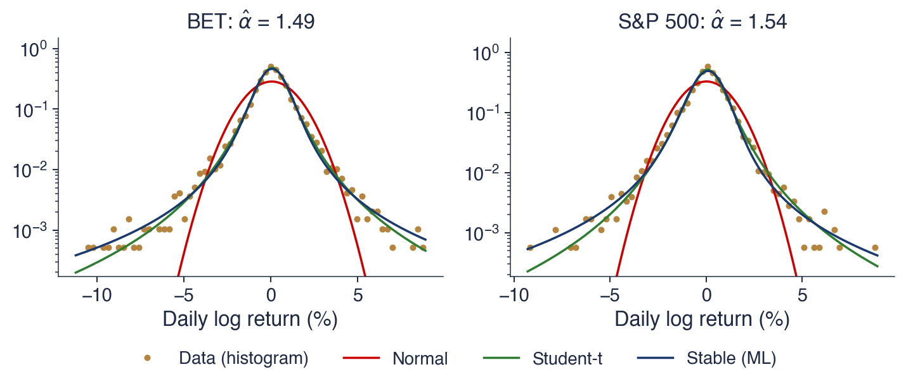

Bucharest University of Economic Studies IDA Institute Digital Assets Blockchain Research Center AI4EFin Artificial Intelligence for Energy Finance Romanian Academy, Institute for Economic Forecasting MSCA Digital Finance
Chapter 2 showed that daily returns have heavier tails than the Normal distribution. A model for daily returns, however, is never only a model for one day. Log returns add up over time, so a monthly log return is the sum of about 21 daily log returns, and the law of the daily return fixes the law of every longer horizon. The chapter asks which probability laws can describe daily returns and, at the same time, their weekly and monthly sums.
The answer of probability theory is the family of stable laws. They are the only laws whose sums keep their shape, and, by the generalised central limit theorem (GCLT), the only possible limits of normalised sums of independent and identically distributed (i.i.d.) variables. Mandelbrot (1963) proposed them for cotton prices, with an index of stability \(\alpha \approx 1.7\), which implies an infinite variance. The chapter develops the theory of these laws, their simulation and their estimation, and then fits them to daily log returns of four series: the BET index of the Bucharest Stock Exchange, the S&P 500, the DAX and Bitcoin.
On these series the maximum likelihood (ML) estimates of \(\alpha\) lie between 1.410 and 1.606, far from the Normal value 2, and the stable law fits the centre of the distribution much better than the Normal distribution. In the far tails, however, it predicts many more extreme losses than were observed: for the S&P 500, 19.1 days with a loss above 10% in 6,714 days, against one observed day. The last part of the chapter tests the infinite-variance hypothesis directly and concludes that daily returns have heavy tails but a finite variance.

Daily log returns of the BET and the S&P 500 (dots, histogram on a log scale) with three fitted laws: Normal (red), Student-t (green) and stable, fitted by maximum likelihood (blue); the horizontal axis is the daily log return in %, the vertical axis the density on a log scale.
What you will be able to do
State the stability property and compute the scale of a sum of stable variables.
Explain the generalised central limit theorem and when sums do not approach the Normal distribution.
Interpret the four parameters \((\alpha, \beta, \gamma, \delta)\) and convert between the S0 and S1 parameterisations.
Determine which moments exist for a given \(\alpha\) and compare tail probabilities with those of the Normal distribution.
Simulate stable variables and estimate their parameters by quantiles and by maximum likelihood.
Evaluate, on BET, S&P 500, DAX and Bitcoin returns, where the stable model works and where it fails.
Chapter plan
Mandelbrot and the Cotton PricesThe historical origin: cotton prices, Mandelbrot's hypothesis, Fama's tests and the question of the law of a sum.
Stability under SummationThe definition of stable laws, the scale rule \(c^\alpha = a^\alpha + b^\alpha\) and its consequences for horizons and diversification.
AI for Scientific DiscoveryAn open question on the tails of Bitcoin, the checks it needs and a project seed.
SummaryThe formulas of the chapter and questions for self-assessment.
Mandelbrot and the Cotton Prices
The stable laws entered finance through an empirical observation, not through theory. This section tells how Benoit Mandelbrot came to propose them, how Eugene Fama tested the proposal on stock returns, and why the question is really about the law of a sum of returns.
In the nineteenth century cotton was one of the most traded commodities in the world. The exchanges of New Orleans, New York and Liverpool quoted prices every day, and these quotes produced some of the longest daily and monthly price series available in economics. Long series matter for the study of tails: extreme moves are rare by definition, and only a long record contains enough of them to say how often they occur.
In the early 1960s these series reached Benoit Mandelbrot, then a researcher at IBM (International Business Machines). He did not study the price level but the changes of the logarithm of the price, that is, the log returns of Chapter 1. His paper, Mandelbrot (1963), is the starting point of the study of heavy tails in finance: it asked which probability law describes these changes, and it gave an answer that departed from the Normal distribution used until then.
The painting on the slide, Edgar Degas' A Cotton Office in New Orleans (1873), shows the trade that generated these records.
In brief
In the 19th century cotton was one of the most traded commodities in the world
exchanges in New Orleans, New York and Liverpool quoted prices every day
the result: some of the longest daily and monthly price series in economics
In the early 1960s these series reached Benoit Mandelbrot, then at IBM
he looked at the changes of the logarithm of the price, i.e. log returns
His paper Mandelbrot (1963) started the study of heavy tails in finance
Mandelbrot's first observation was that the cotton series contained far more large changes than the Normal distribution allows. A related symptom was that the sample variance did not settle as the sample grew: each new extreme change pushed it up again, instead of letting it converge to a fixed value as it would for a variable with a finite variance.
The second observation was that the shape of the distribution was the same at every horizon. After rescaling, daily and monthly changes looked alike, which means that the sum of many daily changes kept the shape of a single daily change. Under the Normal distribution this property is familiar, since a sum of Normal variables is again Normal. Mandelbrot saw it together with heavy tails, which the Normal distribution cannot produce.
His proposal combined the two observations: price changes follow stable Paretian laws with an index \(\alpha \approx 1.7\)(Mandelbrot, 1963). "Paretian" refers to tails that decay like a power of \(x\), as in Pareto's law of incomes. The consequence, discussed throughout this chapter, is that the variance of price changes would be infinite.
In brief
Too many large changes: far more big moves than the Normal distribution allows
the sample variance did not settle as the sample grew
The same shape at every horizon: daily and monthly changes looked alike after rescaling
a sum of many daily changes kept the shape of one daily change
His proposal: stable Paretian laws with \(\alpha \approx 1.7\)Mandelbrot (1963)
“Paretian”: the tails decay like a power of \(x\), as in Pareto's law of incomes
consequence: the variance of price changes would be infinite
Fama (1965) took the hypothesis from commodities to stocks. He studied the daily returns of the 30 stocks of the Dow Jones Industrial Average and found, for every stock, more large returns than the Normal distribution predicts. His estimates of the index \(\alpha\) were below 2, which supported Mandelbrot's hypothesis.
Estimation methods for symmetric stable laws followed. Fama & Roll (1968) and Fama & Roll (1971) derived estimators based on sample quantiles, together with the tables needed to use them. These methods are the ancestors of the quantile estimator of McCulloch presented in the estimation section.
Within less than ten years the evidence started to turn against the infinite variance. The critique section at the end of the chapter returns to these studies and repeats their tests on modern data.
In brief
Fama (1965): daily returns of the 30 stocks of the Dow Jones Industrial Average
more large returns than the Normal distribution predicts, for every stock
estimates of \(\alpha\) below 2: support for Mandelbrot's hypothesis
Estimation methods for symmetric stable laws followed
A monthly log return is the sum of about 21 daily log returns. A model for daily returns therefore implies a model for weekly, monthly and yearly returns, and a good model must remain consistent across horizons. The Normal distribution passes this test, since it keeps its shape under summation (Chapter 2), but it has thin tails and misses the large daily moves.
A natural candidate with heavy tails is the Student-t distribution. Question for the room: is the sum of 21 independent Student-t variables again a Student-t variable? The answer is no. The Student-t family is not closed under summation, and if its variance is finite, the central limit theorem (CLT) pushes the sum towards the Normal distribution. A Student-t model for daily returns therefore implies an approximately Normal model for monthly returns.
The goal of the next sections follows from this answer: to find every law whose sums keep the same shape. These are the stable laws.
In brief
A monthly log return is the sum of about 21 daily log returns
a model for daily returns implies a model for weekly, monthly and yearly returns
The Normal distribution keeps its shape under summation (Chapter 2)
but it has thin tails: it misses the large daily moves
Question for the room: the Student-t distribution has heavy tails; is a sum of 21 independent Student-t variables again Student-t?
Answer
no: the Student-t family is not closed under summation
if its variance is finite, the sum moves towards the Normal distribution (the central limit theorem)
Goal: find every law whose sums keep the same shape
Section summary
Mandelbrot's two observations, too many large changes and the same shape at every horizon, led to the hypothesis of stable Paretian laws with \(\alpha \approx 1.7\) and an infinite variance. Fama's study of the Dow Jones stocks supported it, and the question it raises is about the law of a sum of returns. The next section defines the laws that keep their shape under summation.
Stability under Summation
This section defines stable laws through their behaviour under summation and derives the rule that gives the scale of a sum. The rule depends on a single number, the index of stability \(\alpha\), and has direct consequences for the risk of long horizons and for diversification.
A random variable \(X\) is stable if, for two independent copies \(X_1, X_2\) of \(X\) and any weights \(a, b > 0\), there exist a scale \(c > 0\) and a shift \(d\) such that
\[aX_1 + bX_2 \overset{d}{=} cX + d,\]
(3.1)
where \(\overset{d}{=}\) means "has the same distribution as". In words, a weighted sum of two copies has the same shape as one copy; only the scale \(c\) and the location \(d\) change. If \(d = 0\) for all \(a\) and \(b\), the law is strictly stable.
By induction, the property extends to \(n\) independent copies: \(X_1 + \dots + X_n \overset{d}{=} c_n X + d_n\). The scale factor cannot be arbitrary. The only possible factor is \(c_n = n^{1/\alpha}\), with \(0 < \alpha \le 2\)(Nolan, 2020). The exponent \(\alpha\) is called the index of stability, also the characteristic exponent or the tail index, and it indexes the whole family.
The upper bound \(\alpha \le 2\) is not a convention. For \(\alpha = 2\) the factor is \(\sqrt{n}\), the familiar rule for sums of variables with a finite variance; no stable law has a factor growing more slowly than \(\sqrt{n}\).
In brief
\(X\) is stable if, for \(X_1, X_2\) independent copies of \(X\) and any \(a, b > 0\), there are \(c > 0\) and \(d\) with
\(aX_1 + bX_2 \overset{d}{=} cX + d\), where \(\overset{d}{=}\) means “has the same distribution as”
\(a, b\): the weights of the two copies; \(c\): the scale and \(d\): the shift of the result
strictly stable if \(d = 0\) for all \(a, b\)
In words: a weighted sum of two copies has the same shape as one copy
only the scale (\(c\)) and the location (\(d\)) change
By induction, for \(n\) independent copies: \(X_1 + \dots + X_n \overset{d}{=} c_n X + d_n\)
the only possible scale factor is \(c_n = n^{1/\alpha}\) with \(0 < \alpha \le 2\)Nolan (2020)
\(\alpha\) is called the index of stability (also: characteristic exponent, tail index)
The Normal distribution is the first example. If \(X_1, X_2 \sim N(0, \sigma^2)\) are independent, then \(aX_1 + bX_2 \sim N(0, (a^2 + b^2)\sigma^2)\), which has the shape of \(X\) with scale \(c = \sqrt{a^2 + b^2}\). Variances add, so \(c^2 = a^2 + b^2\): this is the case \(\alpha = 2\).
The second example is the Cauchy distribution, with density \(f(x) = 1/(\pi(1 + x^2))\). A weighted sum \(aX_1 + bX_2\) of two independent standard Cauchy variables is Cauchy with scale \(c = a + b\). Scales add linearly, \(c^1 = a^1 + b^1\): this is the case \(\alpha = 1\).
The Cauchy case has a striking consequence. Taking \(a = b = 1/n\) for \(n\) copies, the average of \(n\) Cauchy draws is again standard Cauchy: averaging does not reduce the dispersion at all. The law of large numbers fails because the Cauchy distribution has no mean.
The two examples are special cases of one rule. For independent copies \(X_1, X_2\) of a strictly stable \(X\) with index \(\alpha\), the scale of the weighted sum satisfies
The worked example takes \(a = 3\) and \(b = 4\). For \(\alpha = 2\) the scale of the sum is \(c = \sqrt{9 + 16} = 5.00\); for \(\alpha = 1.5\) it is \(c = (3^{1.5} + 4^{1.5})^{1/1.5} = 5.58\); for \(\alpha = 1\) it is \(c = 3 + 4 = 7.00\). The smaller \(\alpha\), the larger the scale of the sum. With heavy tails a single large term can dominate the whole sum, so the sum is wider than the Normal rule suggests.
What do you think? For \(\alpha = 1.5\), what is the scale factor of a sum of two copies? Setting \(a = b = 1\) in (3.2) gives \(c_2 = 2^{1/1.5} = 2^{2/3} = 1.59\), larger than the factor \(\sqrt{2} \approx 1.41\) of the Normal distribution.
In brief
For \(X_1, X_2\) independent copies of a strictly stable \(X\) with index \(\alpha\):
Question for the room On the slide, with α = 1.5 the scale of the 20-day sum is 7.37γ, 1.65 times the factor √20 = 4.47. The ▶ button moves the horizon n up to 250 days. How many times larger is the scale for α = 1.5 than the one given by the square-root-of-time rule at n = 250?
Answer
2.51 times: 2501/1.5 = 39.69, against √250 = 15.81. The ratio is n1/α − 1/2 = 2501/6, so it grows with the horizon. With α̂ = 1.540 fitted to the S&P 500, the ratio is 1.56 at 20 days and 2.28 at 250 days. For an equally weighted portfolio of N = 10 assets, the scale falls to 0.46γ for α = 1.5, against 0.32γ for the Normal distribution.
Question for the room On the slide, the sum of 10 draws from S(1.7, 0, 1, 0) divided by √10 has a 99% quantile of 6.31, against 5.04 for a single draw. What does this quantile become if we add 50 draws and still divide by √n?
Answer
About 7.27. Divided by 501/1.7 = 9.98, the same sum has a 99% quantile of 5.15, the law of a single draw. The √n rule understates the scale of the sum by the factor n1/α − 1/2, which grows with n: 100.088 = 1.23 and 500.088 = 1.41. With infinite variance, more terms do not bring the sum closer to the rule of the Normal distribution.
The chart checks the stability property by simulation. It uses the notation of the parameters section: \(S(\alpha, \beta, \gamma, \delta)\) is the stable law with index \(\alpha\), skewness \(\beta\), scale \(\gamma\) and location \(\delta\). Each point is a pair of quantiles: on the horizontal axis a quantile of one draw of \(S(1.7, 0, 1, 0)\), on the vertical axis the same quantile of a rescaled sum of 10 draws. If the two laws are equal, the points lie on the 45-degree line.
The blue points divide the sum of 10 draws by \(10^{1/1.7} = 3.87\), the factor \(n^{1/\alpha}\) of stability. They lie on the 45-degree line over the whole range: the rescaled sum has the same law as one draw. The red points divide the same sums by \(\sqrt{10} = 3.16\), the rule of the Normal distribution. The division is too weak, so the tails of the rescaled sum remain too wide: its 99% quantile is 6.31, against 5.04 for a single draw.
The lesson for returns is that the square-root rule used to scale volatility from one horizon to another is a property of \(\alpha = 2\). Under a stable law with \(\alpha < 2\) it understates the spread of the sum.
In brief
Notation (Section 4): \(S(\alpha, \beta, \gamma, \delta)\) is the stable law with index \(\alpha\), skewness \(\beta\), scale \(\gamma\) and location \(\delta\)
Blue: sums of 10 draws of \(S(1.7, 0, 1, 0)\) divided by \(10^{1/1.7} = 3.87\) lie on the 45-degree line: same law as one draw
Red: dividing by \(\sqrt{10} = 3.16\) (the Normal rule) leaves the tails too wide: 99% quantile \(6.31\) vs \(5.04\)
The first consequence concerns the horizon. If daily returns are i.i.d. \(S(\alpha, 0, \gamma, 0)\), the sum over 20 days has scale \(20^{1/\alpha}\gamma\). For \(\alpha = 2\) this is \(4.47\,\gamma\), the square-root-of-time rule; for \(\alpha = 1.7\) it is \(5.83\,\gamma\); for \(\alpha = 1.5\) it is \(7.37\,\gamma\). With \(\alpha < 2\), the risk of long horizons grows faster than \(\sqrt{n}\).
The second consequence concerns diversification. An equally weighted portfolio of \(N\) i.i.d. stable assets is \(\frac{1}{N}(X_1 + \dots + X_N)\), whose scale is \(N^{1/\alpha}\gamma/N = N^{1/\alpha - 1}\gamma\). For \(N = 10\) assets, \(\alpha = 2\) gives \(0.32\,\gamma\),\(\alpha = 1.5\) gives \(0.46\,\gamma\), and \(\alpha = 1\) gives \(1.00\,\gamma\).
With \(\alpha = 1\), diversification does not reduce the scale at all: the portfolio is as dispersed as a single asset. Fama (1965) discussed this consequence of the stable hypothesis for portfolio choice. For \(1 < \alpha < 2\) diversification still helps, but less than under the Normal distribution.
In brief
Horizon: if daily returns are i.i.d. (independent, identically distributed) \(S(\alpha, 0, \gamma, 0)\), the 20-day sum has scale \(20^{1/\alpha}\gamma\)
A stable law is one whose sums of independent copies keep the same shape, only rescaled and shifted. The scale of a weighted sum follows (3.2), and the sum of \(n\) copies has the factor \(n^{1/\alpha}\) with \(0 < \alpha \le 2\). The Normal distribution is the case \(\alpha = 2\) and the Cauchy distribution the case \(\alpha = 1\).
The smaller \(\alpha\), the faster risk grows with the horizon and the less diversification helps. Both effects matter for returns only if \(\alpha < 2\) really describes them, which the last sections of the chapter test.
In brief
Stable law: a sum of independent copies has the same shape, only rescaled and shifted
Small \(\alpha\): risk grows faster with the horizon and diversification helps less
Section summary
Stability under summation singles out a one-parameter rule for scales: \(c^\alpha = a^\alpha + b^\alpha\), and \(n^{1/\alpha}\) for \(n\) copies. The simulation confirmed that a sum of 10 draws with \(\alpha = 1.7\), divided by \(10^{1/1.7}\), has the law of one draw, while the Normal factor \(\sqrt{10}\) leaves its tails too wide. The next section shows why these laws are not only convenient but unavoidable as limits of sums.
The Generalised Central Limit Theorem
The classical central limit theorem explains why the Normal distribution appears whenever many small independent effects are added. This section states its generalisation, which covers variables with an infinite variance, and shows that the tail of a single return decides the law of long sums.
The classical central limit theorem (CLT, Chapter 2) concerns i.i.d. variables \(X_i\) with mean \(\mu\) and finite variance \(\sigma^2\). It states that
in distribution. If the variance is infinite, this statement has no content: \(\sigma\) does not exist, and normalising by \(\sqrt{n}\) is the wrong rate.
The generalised central limit theorem (Gnedenko & Kolmogorov, 1954) answers the question without assuming a finite variance. If, for some constants \(a_n > 0\) and \(b_n\) that rescale and recentre the sum, the normalised sum \((X_1 + \dots + X_n - b_n)/a_n\) converges to a non-degenerate law, then that law is stable. For the classical CLT the constants are \(a_n = \sigma\sqrt{n}\) and \(b_n = n\mu\).
Stable laws are therefore the only possible limits of normalised sums of i.i.d. variables, and the Normal distribution is the special case \(\alpha = 2\). This is the deeper reason to study them: any model in which returns are sums of many independent shocks leads, in the limit, to a stable law.
In brief
Classical CLT (central limit theorem, Chapter 2): \(X_i\) i.i.d. with mean \(\mu\) and finite variance \(\sigma^2\)
\(\dfrac{X_1 + \dots + X_n - n\mu}{\sigma\sqrt{n}} \to N(0, 1)\) in distribution
What if the variance is infinite? The normalisation \(\sqrt{n}\) is then wrong
GCLT (generalised central limit theorem) Gnedenko & Kolmogorov (1954): if \((X_1 + \dots + X_n - b_n)/a_n\) converges to a non-degenerate law, that law is stable
\(a_n > 0\), \(b_n\): normalising constants that rescale and recentre the sum (for the classical CLT, \(a_n = \sigma\sqrt{n}\), \(b_n = n\mu\))
stable laws are the only possible limits of normalised sums of i.i.d. variables
the Normal distribution is the special case \(\alpha = 2\)
The domain of attraction of a stable law is the set of all laws whose normalised sums converge to it. If the variance is finite, the law belongs to the domain of attraction of the Normal distribution, and the normalising constant grows like \(\sqrt{n}\). If the tails follow a power law, \(P(|X| > x) \approx C x^{-\alpha}\) with a constant \(C > 0\) and \(0 < \alpha < 2\), the law belongs to the domain of attraction of the stable law with the same \(\alpha\), and \(a_n \propto n^{1/\alpha}\), where \(\propto\) means proportional to.
The consequence is that the tail of the distribution of one return decides the law of sums with many terms. The centre of the distribution does not matter in the limit; only the rate at which large values become rare does. A law with a power tail of index below 2 leads to a non-Normal stable limit, whatever its shape near zero.
Paul Lévy characterised the stable laws in the 1920s, and the complete theory of limit laws for sums is in Gnedenko & Kolmogorov (1954).
In brief
The domain of attraction of a stable law: all laws whose normalised sums converge to it
finite variance: domain of attraction of the Normal distribution, \(a_n \propto \sqrt{n}\)
power-law tails \(P(|X| > x) \approx C x^{-\alpha}\) with \(0 < \alpha < 2\): the stable law with the same \(\alpha\), \(a_n \propto n^{1/\alpha}\)
\(C > 0\): a constant; \(\propto\): proportional to
So the tail of one return decides the law of long sums
Question for the room At the threshold 10, the Normal distribution with the same interquartile range as the stable limit gives P(|·| > 10) = 0.0005%, against 2.64% for the limit. What probability does the same Normal distribution give at the threshold 3?
Answer
17.2%, close to 19.2% for the sums with n = 100 and to 21.7% for the stable limit. The same interquartile range makes the bodies of the two laws similar; the difference is far in the tails: at the threshold 10, 0.0005% against 2.73% in the simulation. The ▶ button shows how the ratio grows with the threshold.
The chart illustrates the GCLT with a law that is not stable: the Student-t distribution with \(\nu = 1.5\) degrees of freedom. It has infinite variance and tails proportional to \(x^{-1.5}\), so its domain of attraction is that of a stable law with \(\alpha = 1.5\). Sums of \(n\) draws are divided by \(n^{1/1.5}\) and their histograms are drawn on a log scale, for \(n = 1\), 10 and 100.
As \(n\) grows, the histograms approach the stable limit \(S(1.5, 0, 1.53, 0)\), drawn as the solid dark line. The tail probabilities converge as well: the probability that the normalised sum exceeds 10 in absolute value is 2.73% for \(n = 100\) and 2.64% under the limit law. The histogram for \(n = 1\) is visibly more peaked in the centre than the limit, but its tails already have the limiting slope.
The dashed red curve is a Normal distribution with the same interquartile range as the limit. Its probability of an absolute value above 10 is 0.0005%: on the log scale it drops below the histograms long before the tails end. A Normal approximation, fitted to the centre, misses the tails completely.
In brief
Student-t with \(\nu = 1.5\) degrees of freedom: infinite variance, tails \(\propto x^{-1.5}\); sums of \(n\) draws divided by \(n^{1/1.5}\)
\(n = 1, 10, 100\): the histograms approach the stable limit \(S(1.5, 0, 1.53, 0)\); \(P(|\cdot| > 10)\): \(2.73\%\) for \(n = 100\), \(2.64\%\) in the limit
A Normal law with the same interquartile range gives \(0.0005\%\): it misses the tails completely
The GCLT divides the possible models of daily returns into two worlds. If the tail index of daily returns is below 2, the variance is infinite and monthly returns are stable with the same \(\alpha\) as daily returns. If the tail index is above 2, the variance is finite and monthly returns move towards the Normal distribution.
The two worlds give different, testable predictions about returns at longer horizons: in the first, the estimated \(\alpha\) should stay the same as the horizon grows; in the second, it should rise towards 2. Question for the room: in which world do the S&P 500 returns live?
The answer requires data. The critique section estimates \(\alpha\) for daily, weekly and monthly returns of the four series of the chapter and compares the two predictions.
In brief
Two possible worlds for daily returns
tail index below 2 (infinite variance): monthly returns are stable with the same\(\alpha\)
tail index above 2 (finite variance): monthly returns move towards the Normal distribution
The two worlds give different testable predictions about returns at longer horizons
Question for the room: in which world do the S&P 500 returns live?
Answer
we test it with real data in the last sections: estimates of \(\alpha\) at daily, weekly and monthly horizons
The classical CLT requires a finite variance, uses the normalisation \(\sqrt{n}\) and gives a Normal limit. The GCLT drops the variance assumption and shows that stable laws are the only possible limits of normalised sums.
Laws with power-law tails of index \(\alpha < 2\) need the normalisation \(n^{1/\alpha}\), and their sums converge to the stable law with the same \(\alpha\). The tail of a single return therefore decides the law of long sums.
In brief
Classical CLT: finite variance, normalisation \(\sqrt{n}\), Normal limit
GCLT: stable laws are the only limits of normalised sums
Power-law tails with index \(\alpha < 2\): normalisation \(n^{1/\alpha}\), stable limit with the same \(\alpha\)
The tail of a single return decides the law of long sums
Section summary
The GCLT makes the stable laws the natural limits of sums of i.i.d. shocks, with the Normal distribution as the only finite-variance case. Which limit applies depends only on the tail of one return: a tail index below 2 leads to a stable limit with the same \(\alpha\), a tail index above 2 to the Normal distribution. The two cases give testable predictions about the horizon behaviour of \(\hat\alpha\), which the critique section checks. To work with stable laws we first need a way to write them down, the subject of the next section.
Parameters and the Characteristic Function
Apart from three cases, stable laws have no closed-form density. They are defined instead by their characteristic function, which has a simple form and makes the stability property visible. This section introduces the four parameters, the two parameterisations used in practice and the traps they create in software.
The characteristic function of a random variable \(X\) is \(\varphi_X(t) = E[e^{itX}] = E[\cos(tX)] + i\,E[\sin(tX)]\), for real \(t\), where \(i = \sqrt{-1}\) is the imaginary unit and \(t\) is a real argument, not time. It always exists, because \(|e^{itX}| = 1\), even when no moment of \(X\) exists, and it determines the distribution uniquely. Both properties make it the natural tool for laws with infinite variance.
Two properties are used throughout the chapter. For independent \(X\) and \(Y\),\(\varphi_{X+Y}(t) = \varphi_X(t)\,\varphi_Y(t)\): sums of independent variables become products of characteristic functions. For constants \(a\) and \(b\),\(\varphi_{aX+b}(t) = e^{ibt}\varphi_X(at)\), so rescaling and shifting have a simple effect. For the Normal distribution \(N(\mu, \sigma^2)\),\(\varphi(t) = \exp(i\mu t - \sigma^2 t^2/2)\).
The reason to work with \(\varphi\) is practical: apart from three cases, stable laws have no density in closed form. They are defined by their characteristic function, and densities, distribution functions and quantiles are computed numerically from it.
In brief
Characteristic function of \(X\): \(\varphi_X(t) = E[e^{itX}] = E[\cos(tX)] + i\,E[\sin(tX)]\), \(t \in \mathbb{R}\)
\(i = \sqrt{-1}\): the imaginary unit; \(t\): a real argument, not time
it always exists, because \(|e^{itX}| = 1\), even when no moment exists
it determines the distribution uniquely
Two properties used in this chapter
independent \(X, Y\): \(\varphi_{X+Y}(t) = \varphi_X(t)\,\varphi_Y(t)\): sums become products
\(\varphi_{aX+b}(t) = e^{ibt}\varphi_X(at)\)
Normal \(N(\mu, \sigma^2)\): \(\varphi(t) = \exp(i\mu t - \sigma^2 t^2/2)\)
Why we need it: apart from three cases, stable laws have no closed-form density; they are defined by \(\varphi\)
and, for \(\alpha = 1\),\(\varphi(t) = \exp\{-\gamma |t| [1 + i\beta\,\frac{2}{\pi}\mathrm{sign}(t)\ln|t|] + i\delta t\}\). Here \(\mathrm{sign}(t)\) is \(+1\) for \(t > 0\) and \(-1\) for \(t < 0\); the term with \(\beta\) is the imaginary part that makes the law asymmetric.
The four parameters have distinct roles. The index of stability \(\alpha \in (0, 2]\) controls the tails: the smaller \(\alpha\), the heavier the tails. The skewness \(\beta \in [-1, 1]\) controls asymmetry: \(\beta > 0\) gives a heavier right tail and \(\beta < 0\) a heavier left tail. The scale \(\gamma > 0\) plays the role of the standard deviation \(\sigma\), and the location \(\delta\) is a real shift.
Stability can be read directly from (3.3). The sum of \(n\) independent copies has characteristic function \(\varphi(t)^n\), which has the same form with \(\gamma^\alpha\) replaced by \(n\gamma^\alpha\) (and \(\delta\) by \(n\delta\)). The scale of the sum is therefore \(n^{1/\alpha}\gamma\), as in the stability section.
Question for the room From α = 2 to α = 1.5, what changes more: the density at x = 0 or the density at x = 5?
Answer
The density at x = 5. f(0) rises from 0.2821 to 0.2874, by 1.9%, and f(5) rises from 0.000545 to 0.00711, 13 times. On the linear scale the curves look close; the log scale shows that α changes mainly the tails. P(|X| > 5) is 0.041% for α = 2 and 4.14% for α = 1.5.
The chart shows symmetric stable densities \(S(\alpha, 0, 1, 0)\) for \(\alpha\) from 0.7 to 2, on a linear scale (left) and on a log scale (right). On the linear scale, a smaller \(\alpha\) gives a taller and narrower peak; the mass removed from the shoulders moves partly to the centre and partly to the tails.
The log scale shows the tails, which the linear scale hides. The Normal density (\(\alpha = 2\), here with variance 2) falls like \(e^{-x^2/4}\), a downward parabola on the log scale. All the other curves fall like a power of \(x\), which on this scale looks like a slow, almost flat decline. At \(|x| = 8\) the Normal density is already several orders of magnitude below the stable ones.
In brief
Symmetric laws \(S(\alpha, 0, 1, 0)\): smaller \(\alpha\) gives a taller, narrower peak and much heavier tails
Log scale: the Normal tail (\(\alpha = 2\)) falls like \(e^{-x^2/4}\); the others fall like a power of \(x\)
Question for the room For α = 1.3 and β = 0.5, how many times more likely is a value above 10 than a value below −10?
Answer
About 3 times: the ratio is 3.29 at the threshold 10 and tends to (1 + β)/(1 − β) = 1.5/0.5 = 3, from the tail formula P(X > x) ∼ cα(1 + β)x−α and P(X < −x) ∼ cα(1 − β)x−α. At the threshold 3 the probabilities are 10.8% and 3.37%. With β = 1, the left tail falls much faster than x−α.
The left panel varies the skewness \(\beta\) for \(\alpha = 1.3\) and \(\gamma = 1\). The parameter moves weight between the two tails: \(\beta = 1\) (green) has the heavier right tail and \(\beta = -1\) (red) the heavier left tail, while the centre of the density changes little. For returns, a negative \(\beta\) is the stable description of crash risk, a left tail heavier than the right one.
The right panel varies the scale \(\gamma\) for \(\alpha = 1.7\) and \(\beta = 0\). The scale stretches the density: doubling \(\gamma\) doubles every quantile around \(\delta\) and halves the height of the peak. In this respect \(\gamma\) behaves like a standard deviation, but it remains well defined when the variance is infinite.
In brief
\(\beta\) moves weight between the tails: \(\beta = 1\) (green) has the heavier right tail, \(\beta = -1\) (red) the heavier left tail
\(\gamma\) stretches the density: doubling \(\gamma\) doubles every quantile around \(\delta\)
Only the location differs between the two parameterisations. The parameters \(\alpha\),\(\beta\) and \(\gamma\) are the same in both, and the locations \(\delta_0\) (in S0) and \(\delta_1\) (in S1) are related by
Each parameterisation has its use. S1 gives simpler algebra for sums and is used in most theoretical books (Samorodnitsky & Taqqu, 1994). In S0 the density changes continuously with \(\alpha\) and \(\beta\), which makes it better for estimation and for plots (Nolan, 2020). The next frame shows why continuity is the decisive property.
In brief
S0 (Nolan's recommendation for data analysis), \(\alpha \ne 1\):
Question for the room The ▶ button moves α from 0.80 to 1.20, with β = 0.8. Where is the mode of the density in the S1 parameterisation for α = 0.99?
Answer
At about 50.5, far outside the chart. The shift between the two parameterisations is β tan(πα/2) = 0.8 × 63.66 = 50.93, and the mode in S0 is −0.38. At α = 1.01 the tangent changes sign and the mode in S1 moves to about −51. In S0 the mode stays between −0.48 and −0.26 over the whole range.
The chart draws four laws with \(\beta = 0.8\),\(\gamma = 1\) and location 0, for \(\alpha = 0.8\), 0.95, 1.05 and 1.2, first in S1 (left) and then in S0 (right). In S1 the density runs away to \(+\infty\) as \(\alpha \uparrow 1\) and comes back from \(-\infty\) as \(\alpha \downarrow 1\). The reason is the term \(\tan\frac{\pi\alpha}{2}\) in (3.4), which tends to infinity as \(\alpha\) approaches 1: a small change of \(\alpha\) moves the whole law far along the axis.
In S0 the same four laws are shifted so that the mode stays near 0 and changes smoothly with \(\alpha\). For estimation this is the decisive property: an optimiser that moves \(\alpha\) slightly sees a slightly different density, not a law that has jumped across the axis. This is why S0 is used for fitting and S1 for algebra.
In brief
S1 (left): with \(\beta = 0.8\), the density runs away to \(+\infty\) as \(\alpha \uparrow 1\) and comes back from \(-\infty\) as \(\alpha \downarrow 1\), because \(\tan\frac{\pi\alpha}{2}\) explodes
S0 (right): the same four laws, shifted; the mode stays near 0 and changes smoothly
The parameterisation is a frequent source of errors in software. The function `scipy.stats.levy_stable` uses S1 by default; it is switched to S0 with `levy_stable.parameterization = 'S0'`, and its arguments are `levy_stable.pdf(x, alpha, beta, loc=delta, scale=gamma)`. Papers and programs report \(\delta\) in S0, in S1 or in other parameterisations, so the parameterisation must be checked before results are compared.
A second trap concerns the scale. The stable law with \(\alpha = 2\),\(S(2, 0, \gamma, \delta)\), is \(N(\delta, 2\gamma^2)\), not \(N(\delta, \gamma^2)\). For the Normal distribution, therefore, \(\gamma = \sigma/\sqrt{2}\), and a stable \(\hat\gamma\) is not directly comparable with a sample standard deviation.
In this course the estimates are reported in S0, and \(\delta_1\) is reported separately, so that results can be compared with programs that use S1.
Three stable laws have a density in closed form. The Normal distribution is the case \(\alpha = 2\), in which \(\beta\) plays no role: \(\varphi(t) = \exp(-\gamma^2 t^2 + i\delta t)\), which is \(N(\delta, 2\gamma^2)\). The Cauchy distribution is the case \(\alpha = 1\),\(\beta = 0\), with density \(f(x) = \gamma/(\pi(\gamma^2 + (x - \delta)^2))\) and \(\varphi(t) = \exp(-\gamma|t| + i\delta t)\).
The Lévy distribution is the case \(\alpha = 1/2\),\(\beta = 1\) (in S1), totally skewed to the right. Its density is
It has a probabilistic interpretation: the first time a Brownian motion hits a given level has a Lévy law.
All other stable densities are computed numerically from \(\varphi\), either by direct integration (Nolan, 1997) or with the fast Fourier transform (Mittnik, Doganoglu & Chenyao, 1999).
In brief
Normal: \(\alpha = 2\) (\(\beta\) plays no role)
\(\varphi(t) = \exp(-\gamma^2 t^2 + i\delta t)\), i.e. \(N(\delta, 2\gamma^2)\)
Question for the room On the slide, α = 1.5 and β = 0.3 give δ0 − δ1 = −0.3. The ▶ button raises α from 1.1 to 1.9, with β = 0.3. For which value is the gap between the two locations larger in absolute value: α = 1.1 or α = 1.9?
Answer
For α = 1.1: β tan(πα/2) = 0.3 × (−6.314) = −1.894, against 0.3 × (−0.158) = −0.048 for α = 1.9. The tangent goes to infinity as α approaches 1, which is why the S1 parameterisation moves the density a lot around α = 1 and S0 does not. The modulus |φ(t)| = e−|t|α is the same in both parameterisations; only the argument differs, by a term linear in t.
Question for the room For the threshold x = 20, which of the three laws has the largest probability P(X > x)?
Answer
The Lévy law: 17.7%, against 1.59% for the Cauchy and about 3 × 10−87% for the Normal distribution. The Lévy tail falls as x−1/2 (α = 1/2), the Cauchy tail as x−1. For x = 3 the probabilities are 43.6% (Lévy), 10.2% (Cauchy) and 0.13% (Normal distribution).
The chart compares the three closed-form laws: the Normal distribution with variance 1 (\(\alpha = 2\),\(\gamma = 1/\sqrt{2}\)), the Cauchy distribution with \(\gamma = 1\) and the Lévy distribution with \(\gamma = 1\) in S1. The Cauchy density has a lower peak than the Normal density and much heavier tails: beyond \(|x| \approx 2\) its curve stays clearly above the Normal one.
The Lévy density takes only positive values. It rises steeply just above zero and then decays slowly, with a long right tail. Because its index is \(\alpha = 1/2\), below 1, its mean is infinite, as the tails section explains.
In brief
Cauchy: lower peak, much heavier tails than the Normal distribution with variance 1
Lévy: only positive values, a long right tail; its mean is infinite
The worked example compares S1 and S0 at a single point, \(t = 1\), for \(X\) with \(\alpha = 1.5\),\(\beta = 0.3\),\(\gamma = 1\) and \(\delta = 0\). A useful value is \(\tan\frac{3\pi}{4} = -1\). In S1, (3.3) gives \(\ln\varphi(1) = -1\cdot[1 - i \cdot 0.3 \cdot (-1)] = -1 - 0.3i\), so \(\varphi(1) = e^{-1}(\cos 0.3 - i \sin 0.3) = 0.351 - 0.109i\), with modulus \(|\varphi(1)| = e^{-1} = 0.368\).
In S0 the factor \(|t|^{1-\alpha} - 1\) is zero at \(t = 1\), so the imaginary part vanishes and \(\varphi(1) = e^{-1} = 0.368\), a real number. The two characteristic functions have the same modulus. This is what a pure shift does: by \(\varphi_{X+b}(t) = e^{ibt}\varphi_X(t)\), a shift multiplies \(\varphi\) by a complex number of modulus 1 and leaves the modulus unchanged.
The size of the shift follows from (3.4):\(\beta\gamma\tan\frac{\pi\alpha}{2} = 0.3 \cdot 1 \cdot (-1) = -0.3\). The S1 law with \(\delta_1 = 0\) is therefore the S0 law with \(\delta_0 = -0.3\).
Stable laws are defined by their characteristic function (3.3), and their densities are computed numerically. The four parameters have separate roles: \(\alpha\) the tails, \(\beta\) the skewness, \(\gamma\) the scale and \(\delta\) the location.
The S0 and S1 parameterisations differ only in \(\delta\), through (3.4), and scipy uses S1 by default. The closed forms are the Normal distribution (\(\alpha = 2\), variance \(2\gamma^2\)), the Cauchy distribution and the Lévy distribution.
In brief
Stable laws are defined by \(\varphi(t)\); the density is computed numerically
S0 vs S1: only \(\delta\) differs, \(\delta_0 = \delta_1 + \beta\gamma\tan\frac{\pi\alpha}{2}\); scipy uses S1 by default
Closed forms: Normal (\(\alpha = 2\), variance \(2\gamma^2\)), Cauchy, Lévy
Section summary
The characteristic function turns the stability property into a statement about one parameter, \(\gamma^\alpha\), which scales linearly with the number of terms. The four parameters separate tails, skewness, scale and location, and the choice between S0 and S1 affects only the location, but in a way that becomes unstable near \(\alpha = 1\) in S1. The next section studies what \(\alpha\) implies for the tails and for the existence of moments.
Tails and Moments
The index \(\alpha\) fixes how fast the tails of a stable law decay and, through the tails, which moments exist. This section derives the power-law tails, the moment condition \(p < \alpha\) and their consequences for the measurement of risk.
with \(c_\alpha = \Gamma(\alpha)\sin(\pi\alpha/2)/\pi\), where \(\Gamma\) is the gamma function and \(f \sim g\) means \(f/g \to 1\). The skewness \(\beta\) enters only through the constants: it changes how much mass each tail carries, not how fast it decays.
On log-log axes, a power-law tail is a straight line with slope \(-\alpha\). Doubling the threshold divides the tail probability by \(2^\alpha\): for \(\alpha = 1.7\) the probability is multiplied by 0.31. The Normal tail behaves differently: it falls like \(e^{-x^2/(4\gamma^2)}\), and doubling the threshold makes it practically zero.
When \(\beta = \pm 1\) and \(\alpha < 1\), one of the tails is missing entirely: the law lives on a half-line. The Lévy distribution of the previous section is an example.
In brief
For \(\alpha < 2\), as \(x \to \infty\)Nolan (2020):
Question for the room For α = 1.9, P(X > 10) = 0.064%. What is P(X > 20)?
Answer
0.0165%: doubling the threshold divides the probability by about 21.9 = 3.7 (the exact ratio is 0.256, the power law gives 2−1.9 = 0.268). With α close to 2 the tail is still a power law, far from the Normal distribution, for which P(X > 10) is of the order of 10−12.
The chart plots the tail probability \(P(X > x)\) of symmetric laws \(S(\alpha, 0, 1, 0)\) on log-log axes, for \(\alpha = 2\), 1.9, 1.7 and 1.5. The solid lines are the exact tail probabilities and the dotted lines the power laws \(c_\alpha x^{-\alpha}\) of (3.5). For \(\alpha = 1.7\) and 1.5 the solid lines join their dotted asymptotes already near \(x = 5\); for \(\alpha = 1.9\) they join only further out. The Normal curve bends down and leaves the chart before \(x = 10\).
The numbers show the size of the difference. The probability of exceeding 10 is 0.279% for \(\alpha = 1.7\), 0.667% for \(\alpha = 1.5\), and about \(8\times 10^{-11}\%\) for the Normal distribution with the same \(\gamma\). A move of ten scale units is a rare but regular event under a stable law with \(\alpha = 1.7\) and practically impossible under the Normal distribution.
In brief
Solid: \(P(X > x)\) of \(S(\alpha, 0, 1, 0)\); dotted: the power law \(c_\alpha x^{-\alpha}\), reached already near \(x = 5\)
\(P(X > 10)\): \(0.279\%\) for \(\alpha = 1.7\), \(0.667\%\) for \(\alpha = 1.5\), about \(8\times 10^{-11}\%\) for the Normal distribution
For \(0 < \alpha < 2\), the absolute moment of order \(p > 0\),\(E|X|^p\), is finite if and only if
\[p < \alpha.\]
(3.6)
The case \(p = 1\) corresponds to the mean and \(p = 2\) to the variance. The reason is the tail: the density of a stable law decays like \(|x|^{-\alpha-1}\), and \(|x|^p\) times such a density is integrable at infinity only if \(p < \alpha\).
The consequences follow by comparing \(\alpha\) with 1 and 2. For \(\alpha < 2\) the variance is infinite, and skewness and kurtosis are not defined. For \(1 < \alpha < 2\) the mean exists, and in S1 it equals \(\delta_1\). For \(\alpha \le 1\) not even the mean exists; the Cauchy and Lévy laws are examples. For \(\alpha = 2\), the Normal case, all moments exist.
What do you think? Mandelbrot found \(\alpha \approx 1.7\) for cotton. Does the mean daily change exist? Yes, because \(1 < 1.7\). The variance, however, does not, because \(2 > 1.7\).
In brief
For \(0 < \alpha < 2\): \(E|X|^p < \infty\) if and only if \(p < \alpha\)
\(E|X|^p\): the absolute moment of order \(p > 0\); \(p = 1\) gives the mean, \(p = 2\) the variance
reason: \(|x|^p\) times a density of order \(|x|^{-\alpha-1}\) is integrable only if \(p < \alpha\)
Consequences
\(\alpha < 2\): infinite variance; skewness and kurtosis are not defined
\(1 < \alpha < 2\): the mean exists; in S1 it equals \(\delta_1\)
\(\alpha \le 1\): not even the mean exists (Cauchy, Lévy)
\(\alpha = 2\): all moments exist
What do you think? Mandelbrot found \(\alpha \approx 1.7\) for cotton. Does the mean daily change exist?
Answer
yes, because \(1 < 1.7\); but the variance does not, because \(2 > 1.7\)
P(|X| > k): the Normal distribution N(0, 2) and the stable law S(α, 0, 1, 0)
Question for the room On the slide, for α = 1.7 and k = 10, P(|X| > k) is 0.56%. What does the power law 2cαk−α, with c1.7 = 0.1313, give?
Answer
0.52%, that is 94% of the exact value. At k = 20 the approximation gives 0.161% against 0.166% exact (97%), and at k = 2 only 8.1% against 18.6%: the tail formula is asymptotic and becomes accurate far in the tail. The ratio to the Normal distribution N(0, 2) is 1.2 at k = 2 and 3.6 × 109 at k = 10.
Question for the room The ▶ button takes α from 1.1 to 2. For α = 1.9, do the three sample variances end near 2 after 20,000 draws, as for the Normal distribution?
Answer
No: 3.16, 2.62 and 4.12, against 1.96 for the Normal distribution. For any α < 2 the variance is infinite and each large draw makes a jump. With α = 1.95 the final values are 2.46, 2.22 and 2.83; only α = 2 gives 2.00, 1.97 and 1.99. With α = 1.7 (the slide): 10.4, 6.6 and 20.2.
The chart shows what an infinite variance looks like in a sample. It plots the sample variance against the sample size, both on log scales, for a Normal sample (blue), the law \(S(2, 0, 1, 0)\) with true variance 2, and for three independent samples from a stable law with \(\alpha = 1.7\).
The Normal sample variance converges to its true value 2 and then stays there. The stable paths behave differently: each large draw makes the variance jump, after which it decays slowly until the next large draw. After 20,000 draws the three stable paths end at 10.4, 6.6 and 20.2, with no sign of convergence; a longer sample would only add further jumps.
This is the phenomenon Mandelbrot observed in cotton prices. The sample variance of a stable sample is a number that can always be computed, but it estimates no population quantity.
In brief
Normal (blue): the sample variance converges to the true value 2
Stable \(\alpha = 1.7\): each large draw makes the variance jump; after 20 000 draws the three paths end at \(10.4\), \(6.6\), \(20.2\)
The table compares the probabilities \(P(|X| > k)\) under a stable law with \(\alpha = 1.7\) and under the Normal distribution, both with \(\beta = 0\),\(\gamma = 1\) and \(\delta = 0\); the Normal law is therefore \(N(0, 2)\). For \(k = 2\) the probabilities are close: 15.73% for the Normal and 18.59% for the stable law, a ratio of 1.2. For \(k = 3\) they are 3.39% and 7.25%, a ratio of 2.1.
Further out the gap opens. For \(k = 5\) the Normal probability is 0.041% and the stable probability 2.13%, a ratio of 52.4. For \(k = 10\) the Normal probability is \(1.5\times 10^{-10}\%\) and the stable probability 0.56%, a ratio of \(3.6\times 10^{9}\).
Near the centre the two laws are almost interchangeable; far in the tails they differ by orders of magnitude. A risk model is judged in the tails, where the choice of law matters most, and a fit that looks good in the centre says little about it.
In brief
\(k\)
\(P(|X| > k)\), Normal %
\(P(|X| > k)\), \(\alpha = 1.7\) %
ratio
\(2\)
\(15.73\)
\(18.59\)
\(1.2\)
\(3\)
\(3.39\)
\(7.25\)
\(2.1\)
\(5\)
\(0.041\)
\(2.13\)
\(52.4\)
\(10\)
\(1.5\times 10^{-10}\)
\(0.56\)
\(3.6\times 10^{9}\)
Both laws with \(\beta = 0\), \(\gamma = 1\), \(\delta = 0\): the Normal law is \(N(0, 2)\)
Near the centre the two laws are close; far in the tails they differ by orders of magnitude
A risk model is judged in the tails, where the choice of law matters most
Several tools of the earlier chapters need a finite variance: the volatility, the Sharpe ratio and its standard error (Chapter 1), mean–variance portfolios, and confidence intervals based on the CLT. With \(\alpha < 2\) these numbers can be computed on any sample, but they estimate nothing, as the previous chart showed for the variance.
Other tools survive. Quantiles always exist, so the value at risk is well defined: \(\mathrm{VaR}_{1\%} = -q_{1\%}\), the negative of the 1% quantile of returns, is the loss exceeded with probability 1%. The expected shortfall at 2.5%, \(\mathrm{ES}_{2.5\%}\), the mean loss beyond the VaR, needs a finite mean and therefore exists only if \(\alpha > 1\). The scale \(\gamma\) and the interquartile range replace the standard deviation as measures of dispersion.
Stable tails decay as \(P(|X| > x) \propto x^{-\alpha}\), a straight line on log-log axes. The absolute moment of order \(p\) is finite if and only if \(p < \alpha\), so \(\alpha < 2\) means an infinite variance.
The sample variance of a stable sample jumps at every large draw and does not settle. Quantiles, the VaR and the scale \(\gamma\) keep their meaning.
In brief
Tails: \(P(|X| > x) \propto x^{-\alpha}\); a straight line on log-log axes
The sample variance of a stable sample jumps and does not settle
Quantiles, VaR and the scale \(\gamma\) remain meaningful
Section summary
The index \(\alpha\) is at once the slope of the tails on log-log axes and the threshold for the existence of moments. Under a stable law with \(\alpha = 1.7\), an absolute move beyond ten scale units has probability 0.56%, against \(1.5\times 10^{-10}\%\) under the Normal distribution, and the sample variance never settles. Measures based on quantiles, such as the VaR, remain valid. These properties also provide the tests of the critique section: a stable model predicts both a sample variance that does not settle and a specific number of extreme losses. Before fitting the model, the next section shows how to simulate it.
Simulation
Stable laws have no closed-form density, but they are easy to simulate. This section presents the Chambers–Mallows–Stuck (CMS) method, which turns one uniform and one exponential draw into a stable draw, first in the symmetric case and then in the general one.
The Chambers–Mallows–Stuck Method (Symmetric Case)
The CMS method (Chambers, Mallows & Stuck, 1976) produces a draw of \(S(\alpha, 0, 1, 0)\) from two independent variables: a uniform angle \(V \sim U(-\pi/2, \pi/2)\) and an exponential variable \(W \sim \mathrm{Exp}(1)\) with mean 1. The stable draw is
and \(\gamma X + \delta \sim S(\alpha, 0, \gamma, \delta)\) gives any scale and location.
The formula can be checked on the two special cases with known laws. For \(\alpha = 1\) the exponent \((1 - \alpha)/\alpha\) is zero and \(X = \sin V/\cos V = \tan V\); the tangent of a uniform angle is a standard Cauchy variable. For \(\alpha = 2\),\(\cos((1-\alpha)V) = \cos V\) and \(X = \sin(2V)\,(\cos V)^{-1/2}(\cos V/W)^{-1/2} = 2\sin V\sqrt{W}\), which is a \(N(0, 2)\) variable, in agreement with the scale convention \(S(2, 0, 1, 0) = N(0, 2)\).
The method needs no density, no inversion of a distribution function and no rejection step: each pair \((V, W)\) gives exactly one draw.
For \(\beta \ne 0\) and \(\alpha \ne 1\), the general formula in the S1 parameterisation (Weron, 1996) uses two auxiliary constants that depend only on \(\alpha\) and \(\beta\):
\[B = \frac{\arctan(\beta\tan\frac{\pi\alpha}{2})}{\alpha}, \qquad S = \Big(1 + \beta^2\tan^2\tfrac{\pi\alpha}{2}\Big)^{1/(2\alpha)}.\]
The draw is then \(X = S\,\sin(\alpha(V + B))/(\cos V)^{1/\alpha} \cdot (\cos(V - \alpha(V + B))/W)^{(1 - \alpha)/\alpha}\), which follows \(S(\alpha, \beta, 1, 0; 1)\). For \(\beta = 0\),\(B = 0\) and \(S = 1\), and the formula reduces to (3.7).
From the standard draw, any parameters are obtained by scaling and shifting: \(\gamma X + \delta_1\) in S1, and \(\gamma X + \delta_0 - \beta\gamma\tan\frac{\pi\alpha}{2}\) in S0, using (3.4).Weron (1996) corrected a formula of the original paper for \(\beta \ne 0\); `scipy.stats.levy_stable.rvs` uses the same method.
In brief
For \(\alpha \ne 1\), S1 parameterisation Weron (1996):
The worked example produces one draw with \(\alpha = 1.5\) and \(\beta = 0\), from a uniform draw \(U = 0.8\) and an exponential draw \(W = 1.2\). The first step turns \(U\), uniform on \((0, 1)\), into a uniform angle on \((-\pi/2, \pi/2)\):\(V = \pi(U - 1/2) = 0.942\).
The second step evaluates the factors of (3.7):\(\sin(\alpha V) = 0.988\),\((\cos V)^{1/\alpha} = 0.702\), and \(\big(\cos((1 - \alpha)V)/W\big)^{(1 - \alpha)/\alpha} = 1.104\). The draw is \(X = 0.988/0.702 \times 1.104 = 1.554\).
A sample of any size is obtained by repeating the computation with new pairs \((U, W)\). Because each draw is a closed-form function of two standard variables, simulating millions of stable draws takes no longer than simulating Normal ones.
In brief
\(\alpha = 1.5\), \(\beta = 0\); a uniform draw \(U = 0.8\) and an exponential draw \(W = 1.2\)
Steps
\(V = \pi(U - 1/2) = 0.942\): turns \(U\), uniform on \((0, 1)\), into a uniform angle on \((-\pi/2, \pi/2)\)
Question for the room On the slide, U = 0.8 and W = 1.2 give X = 1.554 for α = 1.5 and β = 0. What does X become if W rises to 2, with the same U?
Answer
1.843. For β = 0, W enters only through the factor (cos((1 − α)V)/W)(1 − α)/α; the exponent (1 − α)/α = −1/3 is negative, so X grows in proportion to W1/3: 1.554 × (2/1.2)1/3 = 1.843. A smaller W shrinks the draw: W = 0.5 gives 1.161. For α = 2 the formula becomes 2 sin V √W, a draw from N(0, 2): 1.772 for U = 0.8 and W = 1.2.
Question for the room For α = 1.5 and β = 0.5, the exact 1% and 99% quantiles are −5.40 and 9.76. What do they become for β = −0.5?
Answer
Approximately mirrored: −9.81 and 5.38 (in the simulated sample −9.99 and 5.21). In S1 with δ = 0, the law with −β is the law with β reflected about 0, so β changes which tail is longer, not only the location. The histogram follows the exact density for every combination of α and β.
The chart compares a histogram of 100,000 CMS draws from \(S(1.5, 0.5, 1, 0; 1)\) with the exact density, computed numerically from \(\varphi\). The histogram follows the density closely, including its asymmetry: with \(\beta = 0.5\), the right tail is heavier, and in S1 the mode lies below zero.
The quantiles confirm the agreement in the tails. The sample 1% and 99% quantiles are −5.47 and 9.52; the exact ones are −5.40 and 9.76. A two-sample Kolmogorov–Smirnov (KS) test of the CMS draws against draws from `levy_stable.rvs` gives a statistic of 0.0044 and a p-value of 0.30, so the test finds no difference between the two samples.
In brief
100 000 CMS draws of \(S(1.5, 0.5, 1, 0; 1)\): the histogram follows the density computed from \(\varphi\)
Quantiles 1% and 99%: sample \(-5.47\) and \(9.52\), exact \(-5.40\) and \(9.76\)
Two-sample KS (Kolmogorov–Smirnov) test against levy_stable.rvs: statistic \(0.0044\), p-value \(0.30\), no difference
The CMS method turns a uniform angle \(V\) and an exponential \(W\) into one stable draw. The special cases check the formula: \(\tan V\) gives the Cauchy distribution and \(2\sin V\sqrt{W}\) the Normal distribution \(N(0, 2)\).
The skewed case uses the formula of Weron (1996), and a draw in S0 is obtained by shifting with \(\beta\gamma\tan\frac{\pi\alpha}{2}\).
In brief
CMS: a uniform angle \(V\) and an exponential \(W\) give one stable draw
Special cases check the formula: \(\tan V\) (Cauchy), \(2\sin V\sqrt{W}\) (Normal)
Skewed case: the formula of Weron (1996); shift by \(\beta\gamma\tan\frac{\pi\alpha}{2}\) for S0
Section summary
Simulation is the easy part of working with stable laws: each draw is an explicit function of two standard variables, and 100,000 draws reproduce the exact density, including its quantiles. Simulation also supports the rest of the chapter: the Monte Carlo study of the estimators in the next section and the simulated variance paths of the critique section both rely on it.
Estimation
Estimating a stable law is harder than simulating one, because the likelihood requires the density, which has no closed form. This section presents the three families of estimators and compares the two most used, McCulloch's quantile method and maximum likelihood.
Quantile methods match sample quantiles to those of the stable law. Fama & Roll (1971) developed them for symmetric laws, and McCulloch (1986) extended them to all four parameters. They need only sorted data and published tables.
Characteristic-function methods use the empirical characteristic function \(\hat\varphi(t) = \frac1n\sum_{j=1}^n e^{itr_j}\) of the returns \(r_1, \dots, r_n\). For a stable law \(|\varphi(t)|^2 = e^{-2\gamma^\alpha|t|^\alpha}\), so \(\ln(-\ln|\varphi(t)|^2) = \ln(2\gamma^\alpha) + \alpha\ln|t|\) is linear in \(\ln|t|\). Regressing the empirical version on \(\ln|t|\) gives a slope that estimates \(\alpha\)(Koutrouvelis, 1980).
Maximum likelihood (ML) is the most precise method once the density can be computed (Nolan, 2001; Mittnik et al., 1999). A SAS (Statistical Analysis System) implementation of these estimators is described in Pele (2014).
In brief
Quantile methods: match sample quantiles to those of the stable law
Characteristic-function methods: regress the empirical \(\ln(-\ln|\hat\varphi(t)|^2)\) on \(\ln|t|\)
\(\hat\varphi(t) = \frac1n\sum_{j=1}^n e^{itr_j}\): the empirical characteristic function; \(|\varphi(t)|^2 = e^{-2\gamma^\alpha|t|^\alpha}\), so the log-log relation is linear in \(\ln|t|\)
where \(\hat q_p\) is the sample quantile of order \(p\), the value below which a share \(p\) of the returns lies. The ratio \(\nu_\alpha\) measures the width of the tails relative to the body of the distribution; \(\nu_\beta\) measures the asymmetry of the tails around the median.
Tables III and IV of the paper map the pair \((\nu_\alpha, \nu_\beta)\) to estimates \((\hat\alpha, \hat\beta)\). For the Normal distribution \(\nu_\alpha = 2.439\), and a larger \(\nu_\alpha\) means a smaller \(\alpha\). The scale then follows from the interquartile range, \(\hat\gamma = (\hat q_{0.75} - \hat q_{0.25})/\phi_3(\hat\alpha, \hat\beta)\), where \(\phi_3\) is the interquartile range of \(S(\alpha, \beta, 1, 0)\) (Table V), and \(\hat\delta_0\) comes from Table VII.
The method is fast and consistent and is valid for \(0.6 \le \alpha \le 2\). It is less precise than ML, because it uses only five quantiles, and it is a good starting point for ML.
In brief
Two ratios of sample quantiles \(\hat q_p\), free of location and scale McCulloch (1986):
\(\nu_\alpha = \dfrac{\hat q_{0.95} - \hat q_{0.05}}{\hat q_{0.75} - \hat q_{0.25}}\) (tail width relative to the body)
\(\hat q_p\): the sample quantile of order \(p\), the value below which a share \(p\) of the returns lies
Tables III and IV of the paper map \((\nu_\alpha, \nu_\beta)\) to \((\hat\alpha, \hat\beta)\)
Normal distribution: \(\nu_\alpha = 2.439\); larger \(\nu_\alpha\) means smaller \(\alpha\)
Then \(\hat\gamma = (\hat q_{0.75} - \hat q_{0.25})/\phi_3(\hat\alpha, \hat\beta)\) (Table V) and \(\hat\delta_0\) from Table VII; \(\phi_3\): the interquartile range of \(S(\alpha, \beta, 1, 0)\)
Fast, consistent, valid for \(0.6 \le \alpha \le 2\); less precise than ML; a good starting point for ML
Question for the room On the slide, να = 3.425 of the BET gives α̂ = 1.414. The ▶ button moves the start of the sample; from 2010, να of the BET falls to 3.082. What α̂ does Table III give?
Answer
About 1.53: between να = 3.0 ↦ 1.563 and να = 3.2 ↦ 1.484, linear interpolation gives 1.531, and with |νβ| = 0.036 the result is α̂ = 1.529. A smaller να means a narrower 5–95% band relative to the interquartile range, hence thinner tails and a larger α̂. The Normal distribution has να = 2.439 and α = 2.
Question for the room The ▶ button moves the start of the sample from 2000 to 2020. The S&P 500 sample from 2020 has 1,687 days, and the crisis of March 2020 weighs more in it. Does the McCulloch α̂ fall below 1.438?
Answer
No, it rises to 1.543: να falls from 3.338 to 3.044. The McCulloch estimator uses only the 5%, 25%, 50%, 75% and 95% quantiles, so the extreme days do not enter the calculation directly; what matters is how wide the 5–95% band is relative to the interquartile range. The DAX goes from 1.455 to 1.590, BET from 1.414 to 1.480, Bitcoin from 1.322 to 1.400.
The chart draws Table III of McCulloch (1986) for a symmetric sample (\(\nu_\beta = 0\)): the horizontal axis is \(\nu_\alpha\) and the vertical axis the corresponding \(\alpha\). The curve starts at \(\nu_\alpha = 2.439\) for \(\alpha = 2\) and falls as \(\nu_\alpha\) grows; heavier tails stretch the 5%–95% range relative to the interquartile range.
The stars place the daily log returns of the four series of the chapter, the indices since 2000 and Bitcoin since 2014. Their values of \(\nu_\alpha\) are 3.425 for the BET, 3.338 for the S&P 500, 3.285 for the DAX and 3.803 for Bitcoin. All are well above 2.439, so the tails of all four series are much wider, relative to their bodies, than the Normal distribution allows. Bitcoin lies furthest to the right, with the lowest implied \(\alpha\).
In brief
Line: Table III for a symmetric sample (\(\nu_\beta = 0\))
Stars: daily log returns since 2000 (Bitcoin since 2014)
\(\nu_\alpha\): BET \(3.425\), S&P 500 \(3.338\), DAX \(3.285\), Bitcoin \(3.803\)
All well above 2.439: tails much wider than the Normal distribution allows
The worked example applies the method to BET daily log returns in %, from 2000 to 2026, \(n = 6{,}670\) observations. The first step computes the five sample quantiles: \(\hat q_{0.05} = -1.93\),\(\hat q_{0.25} = -0.50\),\(\hat q_{0.5} = 0.08\),\(\hat q_{0.75} = 0.66\) and \(\hat q_{0.95} = 2.06\).
The second step forms the ratios of (3.8):\(\nu_\alpha = 4.00/1.17 = 3.425\), and \(\nu_\beta = -0.006\), so the sample is practically symmetric. The third step reads Table III in the column \(\nu_\beta = 0\), where \(\nu_\alpha = 3.2\) corresponds to \(\alpha = 1.484\) and \(\nu_\alpha = 3.5\) to \(\alpha = 1.391\). Linear interpolation between the two rows gives \(\hat\alpha \approx 1.414\).
The fourth step uses the remaining tables: the scale is \(\hat\gamma = 0.60\) (% a day), the skewness \(\hat\beta = -0.011\) and the location \(\hat\delta_0 = 0.079\). The estimate \(\hat\alpha \approx 1.414\) is far below the Normal value 2.
In brief
BET daily log returns (%), 2000–2026, \(n = 6\,670\)
For a sample \(r_1, \dots, r_n\), the log-likelihood is \(\ell(\theta) = \sum_{t=1}^n \ln f(r_t; \theta)\), where \(\theta = (\alpha, \beta, \gamma, \delta_0)\) is the vector of the four parameters and \(f(r_t; \theta)\) the stable density at \(r_t\). The ML estimate \(\hat\theta\) maximises \(\ell\) numerically, starting from the McCulloch estimate. Standard errors come from the curvature of \(\ell\) at the maximum: the inverse of the Hessian, the matrix of second derivatives of \(\ell\).
The difficulty is the density itself, which must be computed from \(\varphi\) by the inversion formula \(f(x) = \frac{1}{2\pi}\int e^{-itx}\varphi(t)\,dt\). It can be evaluated on a grid with the fast Fourier transform (FFT) (Mittnik, Doganoglu & Chenyao, 1999) or by direct numerical integration (Nolan, 1997). The function `levy_stable.fit` performs this computation and needs minutes for a few thousand returns.
In the S0 parameterisation, ML estimation is regular for \(\alpha \in (0, 2)\): the estimator is asymptotically Normal and its standard errors shrink like \(1/\sqrt{n}\)(Nolan, 2001).
In brief
Log-likelihood of a sample \(r_1, \dots, r_n\): \(\ell(\theta) = \sum_{t=1}^n \ln f(r_t; \theta)\), \(\theta = (\alpha, \beta, \gamma, \delta_0)\)
\(\theta\): the vector of the four parameters; \(f(r_t; \theta)\): the stable density at \(r_t\); \(\hat\theta\) maximises \(\ell\) numerically, starting from the McCulloch estimate
standard errors from the curvature of \(\ell\): the inverse of the Hessian, the matrix of second derivatives of \(\ell\)
The density \(f\) is computed from \(\varphi\)
\(f(x) = \frac{1}{2\pi}\int e^{-itx}\varphi(t)\,dt\), evaluated on a grid with the FFT (fast Fourier transform) Mittnik, Doganoglu & Chenyao (1999)
or by direct integration Nolan (1997); levy_stable.fit does this and needs minutes for a few thousand returns
ML in S0 is regular for \(\alpha \in (0, 2)\): standard errors shrink like \(1/\sqrt{n}\)Nolan (2001)
Question for the room At 95%, the ML interval for α of the S&P 500 is [1.499, 1.581], and the McCulloch α̂ is 1.438, below the interval. For how many of the four series is the McCulloch α̂ below the 99% ML interval?
Answer
For all four. At 99% (±2.576 standard errors) the intervals are BET [1.435, 1.537], S&P 500 [1.486, 1.594], DAX [1.551, 1.661] and Bitcoin [1.343, 1.476], and the McCulloch α̂ is 1.414, 1.438, 1.455 and 1.322. Not even at 99.9% does the conclusion change (Bitcoin: lower bound 1.324). The two methods weigh the tails differently. The intervals are asymptotic and do not include the uncertainty of the McCulloch estimate.
Question for the room The ▶ button raises the number of Monte Carlo samples from 10 to 200. Does the standard deviation of the ML α̂ for n = 500 change between 100 and 200 samples?
Answer
Yes: from 0.050 to 0.061. The precision of α̂ depends on the sample size n; the number of Monte Carlo samples only determines how well this precision is measured. With 100 samples, the estimated standard deviation still has a relative error of at least 1/√(2 × 100) = 7%. For McCulloch, 0.110 at 100 and 0.107 at 200.
The Monte Carlo study draws 200 samples from \(S(1.7, 0, 1, 0)\) for each sample size, \(n = 500\) and \(n = 2500\), and estimates \(\alpha\) by both methods. The box plots show the distribution of \(\hat\alpha\) across the 200 samples; the dashed line marks the true value 1.7. Both estimators are centred on 1.7, so neither is visibly biased.
The precision differs. The standard deviation of \(\hat\alpha\) is 0.107 for McCulloch and 0.061 for ML at \(n = 500\), and 0.046 against 0.030 at \(n = 2500\). ML is therefore about 1.7 times more precise on the same data. With \(n = 500\), McCulloch's method occasionally reaches the bound \(\alpha = 2\), visible as outliers at the top of the first box.
In brief
200 samples of \(S(1.7, 0, 1, 0)\) for each size; both estimators are centred on 1.7
Standard deviation of \(\hat\alpha\): \(n = 500\): McCulloch \(0.107\), ML \(0.061\); \(n = 2500\): \(0.046\) vs \(0.030\)
ML is about \(1.7\) times more precise for the same data
McCulloch's method needs five quantiles, two ratios and four tables; it is fast and robust. ML computes the density numerically from \(\varphi\) and maximises the likelihood numerically; it is the most precise.
Every estimate must state its parameterisation, S0 or S1, and the units of \(\gamma\) and \(\delta\), since both change when returns are expressed in % instead of decimals.
In brief
McCulloch: five quantiles, two ratios, four tables; fast and robust
ML: numerical density from \(\varphi\), numerical maximisation; the most precise
Report the parameterisation (S0 or S1) and the units of \(\gamma\) and \(\delta\)
Section summary
The two estimators complement each other: McCulloch's quantile method gives a quick and robust estimate from five quantiles, and ML, started from it, gains a factor of about 1.7 in precision on samples from \(S(1.7, 0, 1, 0)\). On BET daily returns the quantile method already gives \(\hat\alpha \approx 1.414\), far from the Normal value 2. The next section fits the stable law by ML to all four series and confronts it with the data and with two alternative laws.
Fitting Real Returns
This section fits the stable law by maximum likelihood to daily log returns of four series: the BET, the S&P 500 and the DAX from 2000 to 2026, and Bitcoin from 2014 to 2026. The stable fit is compared with two alternatives: the Normal distribution and the Student-t distribution. The comparison uses densities, QQ plots, tail probabilities, counts of large losses, the VaR and an information criterion.
The table reports the estimates for the four series. Returns are daily log returns in %; the indices cover 2000–2026 and Bitcoin 2014–2026, with seven trading days a week. The column "McC." gives McCulloch's \(\hat\alpha\); the ML estimates are in S0, with standard errors (SE) in parentheses; \(\hat\gamma\),\(\hat\delta_0\) and \(\hat\delta_1\) are in % a day.
The ML estimates of \(\alpha\) are 1.486 (SE 0.020) for the BET, with \(n = 6{,}670\) days; 1.540 (SE 0.021) for the S&P 500, with \(n = 6{,}714\); 1.606 (SE 0.021) for the DAX, with \(n = 6{,}786\); and 1.410 (SE 0.026) for Bitcoin, with \(n = 4{,}384\). The ML estimates of \(\beta\) are −0.016 (SE 0.034) for the BET, −0.181 (SE 0.036) for the S&P 500, −0.179 (SE 0.040) for the DAX and 0.019 (SE 0.036) for Bitcoin.
The scale \(\hat\gamma\) is 0.62% a day for the BET, 0.58% for the S&P 500, 0.74% for the DAX and 1.54% for Bitcoin. The locations differ between the two parameterisations exactly as (3.4) predicts: for the S&P 500, \(\hat\delta_0 = 0.093\) and \(\hat\delta_1 = 0.000\), the difference being \(\hat\beta\hat\gamma\tan\frac{\pi\hat\alpha}{2}\).
In brief
\(n\)
\(\hat\alpha\) McC.
\(\hat\alpha\) ML (SE)
\(\hat\beta\) ML (SE)
\(\hat\gamma\)
\(\hat\delta_0\)
\(\hat\delta_1\)
BET
6 670
\(1.414\)
\(1.486\) (\(0.020\))
\(-0.016\) (\(0.034\))
\(0.62\)
\(0.088\)
\(0.078\)
S&P 500
6 714
\(1.438\)
\(1.540\) (\(0.021\))
\(-0.181\) (\(0.036\))
\(0.58\)
\(0.093\)
\(0.000\)
DAX
6 786
\(1.455\)
\(1.606\) (\(0.021\))
\(-0.179\) (\(0.040\))
\(0.74\)
\(0.090\)
\(-0.004\)
Bitcoin
4 384
\(1.322\)
\(1.410\) (\(0.026\))
\(0.019\) (\(0.036\))
\(1.54\)
\(0.132\)
\(0.171\)
Daily log returns in %; indices 2000–2026, Bitcoin 2014–2026 (7 days a week); data: EODHD
McC.: McCulloch; ML in S0 with standard errors; \(\hat\gamma\), \(\hat\delta_0\), \(\hat\delta_1\) in % a day
All four estimates of \(\alpha\) are far below 2. For the S&P 500 the distance from the Normal case is \((2 - 1.540)/0.021 \approx 22\) standard errors, so the Normal value is rejected by any conventional test. The heaviest tails are those of Bitcoin, with \(\hat\alpha = 1.410\).
The skewness is negative for the S&P 500 and the DAX, about −0.18 for both: the left tail is heavier, which reflects crashes. For the BET and Bitcoin, \(\hat\beta\) lies within two standard errors of 0, so these series show no significant asymmetry.
The scale shows how different the series are in size: \(\hat\gamma\) is 1.54% a day for Bitcoin and 0.58% for the S&P 500. The sample standard deviations, 3.49% and 1.21%, are larger than \(\sqrt{2}\hat\gamma\), the standard deviation of a Normal law with the same \(\gamma\), because they are inflated by the tails. Finally, McCulloch's method gives a lower \(\hat\alpha\) than ML for every series: the two methods weigh the tails differently, the former through five quantiles, the latter through every observation.
In brief
\(\hat\alpha\) well below 2 for all four series
S&P 500: \((2 - 1.540)/0.021 \approx 22\) standard errors from the Normal case
the heaviest tails: Bitcoin (\(\hat\alpha = 1.410\))
\(\hat\beta < 0\) for the S&P 500 and the DAX: the left tail is heavier (crashes)
BET and Bitcoin: \(\hat\beta\) within two standard errors of 0
\(\hat\gamma\): Bitcoin \(1.54\%\) vs S&P 500 \(0.58\%\) a day; compare the sample standard deviations \(3.49\%\) and \(1.21\%\)
McCulloch gives lower \(\hat\alpha\) than ML for every series: the two methods weigh the tails differently
Question for the room At x = −6 standard deviations (−7.28% per day for the S&P 500), how many times smaller is the density of the fitted Normal distribution than the Student-t density?
Answer
About 120,000 times: 4.4 × 10−9 against 5.5 × 10−4. The stable density is 1.0 × 10−3, almost twice the Student-t density. The Normal tail falls as e−x²/2, the other two as a power of x, so the ratio grows very fast with |x|.
The chart plots the empirical density of daily returns (dots, from a histogram) for the BET and the S&P 500 on a log scale, together with three fitted laws: Normal (red), Student-t (green) and stable, fitted by ML (blue). The log scale makes the tails visible; on a linear scale they would be indistinguishable from zero.
The Normal density is a parabola on this scale and fails on both counts: it is too low at the centre, and it falls below the data beyond about 4% in either direction, so it predicts far too few large returns. The Student-t and stable densities both follow the body of the distribution closely, from the peak down to densities of about \(10^{-2}\).
In brief
Normal (red): far too few large returns; Student-t (green) and stable (blue) both follow the body
Question for the room At x = −8 standard deviations for the DAX (−11.26% per day), how many times larger is the stable density than the Student-t density?
Answer
About 2.9 times: 3.7 × 10−4 against 1.3 × 10−4. The stable tail falls as |x|−α̂−1 with α̂ = 1.61, the Student-t tail as |x|−ν̂−1 with ν̂ = 3.09; a smaller exponent means a heavier tail. The ratio is 1.6 at −5 standard deviations and 3.9 at −10.
The same comparison for the DAX and Bitcoin shows the far tails more clearly. Beyond the range where both heavy-tailed laws fit, the stable density stays above the data points, while the Student-t density is closer to them. For Bitcoin, whose returns reach about ±20% on the chart, the gap is visible in both tails.
This is the first sign of the pattern found throughout the section: the stable law describes the centre and the moderate tails well, but its power-law tails with \(\alpha\) near 1.5 are too heavy for the most extreme returns.
In brief
Far tails: the stable density stays above the data points; the Student-t is closer
Question for the room The ▶ button lowers the level p from 5% to 0.1%. At p = 0.1%, what VaR does the fitted stable law give for the S&P 500, against 7.22% in the data?
Answer
19.70%, 2.7 times the empirical quantile. The Student-t gives 8.58%, the Normal distribution 3.72%. At p = 1%, the values are 3.45% (data), 4.54% (stable), 3.46% (Student-t) and 2.80% (Normal): the stable law already overstates, but the gap grows as p gets smaller.
A QQ (quantile–quantile) plot puts the empirical quantiles of the returns on the vertical axis against the quantiles of a fitted model on the horizontal axis. If the model is correct, the points lie on the 45-degree line. Deviations at the ends show which tail is mis-specified and in which direction.
For the BET and the S&P 500, the three models agree in the centre, where all points lie on the line. They separate at the ends. The Normal points (red) turn steeply away from the line: the empirical extremes are much larger than the Normal quantiles. The stable points (blue) turn the other way and become flat: the stable model places its extreme quantiles far beyond the data, at about −23% for the BET where the empirical quantile is about −10%. The Student-t points (green) stay closest to the line.
In brief
A QQ (quantile–quantile) plot puts the empirical quantiles against the model quantiles; a good model lies on the 45-degree line
Question for the room At p = 1%, the VaR of Bitcoin in the data is 10.51%. Which fitted model gives the closest value?
Answer
The Student-t: 11.06%. The stable law gives 14.26%, the Normal distribution 7.99%. At p = 0.1%, the data give 18.05%, the Student-t 31.95% and the stable law 74.16%: the Student-t also overstates the far tail of Bitcoin, but much less than the stable law.
The DAX and Bitcoin show the same three patterns. The Normal distribution has tails that are too short, which appears as steep ends; the stable distribution has tails that are too long, which appears as flat ends, with model quantiles far beyond the data; the Student-t distribution is the closest of the three. For Bitcoin the most extreme stable quantiles reach about 70% in absolute value, against empirical quantiles near 17%.
A QQ plot of this kind identifies the failure of each model without any test: the Normal model underestimates and the stable model overestimates the extremes.
In brief
Normal: too-short tails (steep ends); stable: too-long tails (flat ends, model quantiles far beyond the data); Student-t: the closest
Question for the room The S&P 500 has 23 days with losses above 5% in 6,714 days. How many such days does the fitted stable law expect?
Answer
57.3, 2.5 times as many. The Student-t expects 27.0, the Normal distribution 0.1. For losses above 10%: one day observed, 4.5 under the Student-t and 19.1 under the stable law. The ratio between the days expected by the stable law and those observed grows with the threshold.
The chart looks at the left tail on log-log axes. The points show, for each loss level \(x\) (in %, horizontal axis), the share of days with a loss above \(x\); the lines show the same probability under each fitted model. The dotted horizontal line marks the probability of one day in the sample, the smallest non-zero empirical frequency.
For the BET and the S&P 500, all three models agree with the data for losses up to about 2–3%. Beyond that the Normal curve (red) falls vertically. The stable curve (blue) continues as a straight line, as (3.5) predicts. The data points bend down below it, and the Student-t curve (green) follows them further.
In brief
Points: share of days with a loss above \(x\); lines: the same probability under each fitted model
Question for the room The stable law fitted to the S&P 500 expects 19.1 days with losses above 10% in 6,714 days. How many days does the power-law tail approximation cα(1 − β̂)z−α̂ give, with z = (10 + δ̂0)/γ̂ = 17.33?
Answer
18.3 days, 96% of the exact value: c1.540 = 0.1868, P ≈ 0.1868 × 1.181 × 17.33−1.540 = 0.00273. The factor 1 − β̂ = 1.181 comes from β̂ = −0.181: the left tail of the fitted law is heavier than the right one. Observed: a single day. For Bitcoin at 10%, the approximation gives 68.2 days, against 73.9 exact and 56 observed.
VaRp = −qp from the data and from the three fitted models (% a day)
Worked example: VaR from the fitted stable law and from the Normal distribution
Question for the room At VaR 1% for the S&P 500, the stable law gives 4.54%, 1.62 times the VaR of the Normal distribution (2.80%). The ▶ button lowers the level of the second group of columns. What does the stable/Normal ratio become at VaR 0.05%?
Answer
About 7.9: 31.21% against 3.97%. The ratio grows as p falls, because the quantile of the stable law grows like p−1/α and the Normal one only like √(2 ln(1/p)). The empirical quantile at 0.05% is 9.31%, so the stable law exceeds the data 3.4 times. At 5% the stable/Normal ratio is 0.91: in the body of the distribution, the stable law gives a smaller VaR.
Information criteria of the three fitted models
Question for the room On the slide, AIC prefers the Student-t to the stable law by 92 points for the S&P 500. What does the gap become with BIC = k ln n − 2ℓ?
Answer
98.4 points. The stable law has one more parameter (4 against 3), and BIC penalises it by ln 6,714 = 8.81 instead of 2: 91.6 + 6.8 = 98.4. The conclusion does not change. Against the Normal distribution, the AIC gains of the Student-t lie between 1,306 (DAX) and 2,411 (BET) points, those of the stable law between 1,204 and 2,319: "thousands of points" holds only for the BET.
Question for the room Bitcoin has 4 days with losses above 20% in 4,384 days. How many days do the Student-t and the stable law expect?
Answer
12.3 under the Student-t and 26.9 under the stable law; the Normal distribution gives practically zero. Both heavy-tailed models overstate the far tail of Bitcoin, the stable law more than 6 times. For losses above 10%: 56 observed, 54.2 (Student-t), 73.9 (stable).
For the DAX and Bitcoin the picture is the same. The empirical tail bends down faster than the stable line: on log-log axes, its slope becomes steeper than \(-\hat\alpha\). In terms of the tail index, the far tail of the data is lighter than a stable tail with index \(\hat\alpha\), so its tail index is larger than \(\hat\alpha\).
The ML estimate of \(\alpha\) is driven mostly by the many observations in the body and the moderate tails. It cannot adjust to the few extreme observations, because a stable law ties the slope of the far tail to the same \(\alpha\) that shapes the centre.
In brief
The empirical tail bends down faster than the stable line: the tail index of the data is larger than \(\hat\alpha\)
The table turns the tail probabilities into numbers of days. For each model, the expected number of days with a loss beyond \(x\) is \(n \times P(r < -x)\) under the fitted law. For the S&P 500, 23 days with a loss above 5% were observed; the Normal model expects 0.1 days, the Student-t 27.0 and the stable law 57.3. For losses above 10%, one day was observed, against practically zero, 4.5 and 19.1 days. For losses above 15% none was observed, against practically zero, 1.5 and 10.2.
The other series confirm the pattern. For the BET, 6 days with losses above 10% were observed, against practically zero under the Normal model, 8.2 under the Student-t and 22.8 under the stable law. For Bitcoin, 56 days with losses above 10% were observed, against 8.1, 54.2 and 73.9; and 4 days with losses above 20%, against practically zero, 12.3 and 26.9.
The Normal model predicts almost no large losses. The stable law predicts too many, and the gap grows with the threshold. The Student-t is closest to the observed counts. For the S&P 500, the stable fit expects 19.1 days below −10% in 6,714 days, where one was observed.
In brief
loss above
observed
Normal
Student-t
stable
S&P 500
\(5\%\)
23
\(0.1\)
\(27.0\)
\(57.3\)
S&P 500
\(10\%\)
1
\(\approx 0\)
\(4.5\)
\(19.1\)
S&P 500
\(15\%\)
0
\(\approx 0\)
\(1.5\)
\(10.2\)
BET
\(10\%\)
6
\(\approx 0\)
\(8.2\)
\(22.8\)
Bitcoin
\(10\%\)
56
\(8.1\)
\(54.2\)
\(73.9\)
Bitcoin
\(20\%\)
4
\(\approx 0\)
\(12.3\)
\(26.9\)
Expected number of days \(= n \times P(r < -x)\) under each fitted model
Normal: almost no large losses; stable: too many, and the gap grows with the threshold; Student-t: closest to the counts
S&P 500: 1 day below \(-10\%\) in 6 714 days; the stable fit expects \(19.1\)
The value at risk at level \(p\) is \(\mathrm{VaR}_p = -q_p\), the daily loss exceeded with probability \(p\) (Chapter 10). The level is written \(p\) here, because \(\alpha\) already denotes the index of stability. The table compares the empirical VaR, from the sample quantile, with the VaR of the three fitted models, at the levels 1% and 0.1%.
At the 1% level, the Normal model gives values that are too low and the stable model values that are too high. For the S&P 500, the empirical VaR 1% is 3.5%; the Normal model gives 2.8%, the Student-t 3.5% and the stable law 4.5%. For Bitcoin the empirical value is 10.5%, against 8.0%, 11.1% and 14.3%.
At the 0.1% level the stable model overshoots much more. Its VaR 0.1% is roughly two to four times the empirical quantile: 23.1% against 9.5% for the BET, 19.7% against 7.2% for the S&P 500, 20.0% against 7.1% for the DAX, and 74.2% against 18.1% for Bitcoin. The Normal model, at 3.7% for the S&P 500, is about half the empirical value.
In brief
VaR 1% (%)
VaR 0.1% (%)
data
Normal
t
stable
data
Normal
t
stable
BET
\(4.1\)
\(3.2\)
\(4.1\)
\(4.9\)
\(9.5\)
\(4.3\)
\(10.9\)
\(23.1\)
S&P 500
\(3.5\)
\(2.8\)
\(3.5\)
\(4.5\)
\(7.2\)
\(3.7\)
\(8.6\)
\(19.7\)
DAX
\(4.2\)
\(3.3\)
\(4.0\)
\(5.0\)
\(7.1\)
\(4.3\)
\(8.8\)
\(20.0\)
Bitcoin
\(10.5\)
\(8.0\)
\(11.1\)
\(14.3\)
\(18.1\)
\(10.7\)
\(31.9\)
\(74.2\)
VaR at level \(p\): \(\mathrm{VaR}_p = -q_p\), the daily loss exceeded with probability \(p\) (Chapter 10); here \(p\), because \(\alpha\) is the stable index
VaR 1%: the Normal model is too low, the stable model too high
VaR 0.1%: the stable model gives roughly two to four times the empirical quantile
The Akaike information criterion (AIC) is \(2k - 2\ell(\hat\theta)\), where \(k\) is the number of parameters and \(\ell(\hat\theta)\) the maximised log-likelihood; a lower value is better. It penalises extra parameters, so a model with more parameters must improve the likelihood enough to be preferred.
Both heavy-tailed models beat the Normal distribution by more than a thousand AIC points on every series; for the S&P 500, the AIC is 21,650 for the Normal model, 19,702 for the Student-t and 19,794 for the stable law. The Student-t is preferred for every series, even though it has fewer parameters than the stable law. For the S&P 500 its advantage is 92 points.
The estimated degrees of freedom \(\hat\nu\) of the Student-t are 2.43 for the BET, 2.67 for the S&P 500, 3.09 for the DAX and 2.23 for Bitcoin, all between 2 and 3.1. A Student-t law has finite moments only of order below \(\nu\): these estimates imply a finite variance, but almost no finite moments of higher order.
In brief
AIC Normal
AIC Student-t
AIC stable
\(\hat\nu\) (Student-t)
BET
23 407
20 996
21 088
\(2.43\)
S&P 500
21 650
19 702
19 794
\(2.67\)
DAX
23 901
22 595
22 697
\(3.09\)
Bitcoin
23 391
22 056
22 159
\(2.23\)
AIC (Akaike information criterion) \(= 2k - 2\ell(\hat\theta)\), with \(k\) the number of parameters; lower is better
Both heavy-tailed models beat the Normal distribution by thousands of AIC points
Student-t wins for every series, with fewer parameters; S&P 500: by 92 points
\(\hat\nu\) between 2 and 3.1: finite variance, but few finite moments beyond it
On all four series, the ML estimates of \(\alpha\) lie between 1.410 and 1.606, far from 2. The stable law describes the body of the distribution much better than the Normal distribution.
It overstates the far tails: it predicts too many extreme losses and gives a VaR 0.1% that is too high. By the AIC, the Student-t distribution fits better on every series.
In brief
All four series: \(\hat\alpha\) between 1.410 and 1.606, far from 2
The stable law fits the body much better than the Normal distribution
It overstates the far tails: too many extreme losses, VaR 0.1% too high
By AIC, the Student-t distribution fits better
Section summary
Fitted to real returns, the stable law is a large improvement on the Normal distribution and a worse description than the Student-t. Its \(\hat\alpha\) between 1.410 and 1.606 captures the heavy tails near the centre, but the same \(\alpha\) forces power-law tails that are too heavy far out: 19.1 expected days with losses beyond 10% for the S&P 500 against one observed, and a VaR 0.1% two to four times the empirical one. The Student-t estimates \(\hat\nu\) between 2.23 and 3.09 point to a finite variance. The next section tests the infinite variance directly.
The Critique: Finite or Infinite Variance?
The fits of the previous section suggest that the far tails of returns are lighter than any stable tail. This section tests the infinite-variance hypothesis directly, with three tests drawn from the theory of the chapter, and then explains why daily returns nevertheless look stable.
Test 1: Does \(\alpha\) Stay the Same When Returns Are Summed?
Question for the room On the slide, the 95% intervals of the ML α̂ for the S&P 500 at the daily (1.54) and monthly (1.82) horizon do not overlap. Do they overlap at the 99% confidence level?
Answer
No. At 99% (±2.576 standard errors), the daily interval is [1.486, 1.594] and the monthly one [1.655, 1.984]. Not even at 99.9% (±3.29 standard errors) do they overlap, although the gap between them almost vanishes. For the DAX and BET the intervals already overlap at 95%. The intervals are asymptotic, and the monthly one rests on 321 months.
The first test uses the stability property itself. If daily returns were i.i.d. stable, weekly and monthly sums would be stable with the same \(\alpha\). If instead daily returns have a finite variance, the GCLT predicts that the estimated \(\alpha\) rises towards 2 as returns are summed over longer horizons.
The chart reports ML estimates of \(\alpha\) with 95% confidence intervals for daily, weekly and monthly returns of the four series; the dashed line marks \(\alpha = 2\). For the S&P 500 the estimates rise from 1.54 (daily) to 1.64 (weekly) and 1.82 (monthly). For Bitcoin they rise from 1.41 to 1.67 and then to 2.00, at the bound 2: for monthly Bitcoin returns the stable fit reaches the Normal case.
In brief
If daily returns were i.i.d. stable, weekly and monthly sums would have the same\(\alpha\) (stability)
ML estimates: S&P 500 \(1.54 \to 1.64 \to 1.82\); Bitcoin \(1.41 \to 1.67 \to 2.00\) (at the bound 2)
The estimated \(\alpha\) rises with the horizon for the S&P 500, the DAX and Bitcoin. For the DAX the sequence is \(1.61 \to 1.72 \to 1.69\), so the rise occurs between daily and weekly returns. For the S&P 500 the 95% intervals of the daily and the monthly estimates do not overlap, so the rise is statistically clear.
The BET is the exception: \(1.49 \to 1.56 \to 1.50\), without a clear rise. Its monthly sample is short, 321 months, and the interval of the monthly estimate is wide, so the test has little power for this series.
The same pattern appears in the classic studies of Officer (1972) and Akgiray & Booth (1988). A rising \(\alpha\) is exactly what the GCLT predicts for sums of returns with a finite variance that converge slowly to the Normal distribution: in that world the stable fit to daily data is an approximation that the aggregation gradually removes.
In brief
\(\hat\alpha\) rises with the horizon for the S&P 500, DAX and Bitcoin
DAX: \(1.61 \to 1.72 \to 1.69\); the daily and monthly intervals do not overlap for the S&P 500
BET: \(1.49 \to 1.56 \to 1.50\), no clear rise
monthly samples are short (321 months): wide intervals
Question for the room For Bitcoin (α̂ = 1.410), the running variance of the data at the end of the sample is 12.14. Where do the final variances of the three paths simulated from the fitted stable law end?
Answer
Much higher: 252.1, 111.4 and 52.6, 4 to 21 times the variance of the data. The same holds for the S&P 500 (the slide): data 1.47, paths 5.9, 5.4 and 15.6. A stable law with α̂ < 2 produces extremes that the real series do not have, and their sample variance does not settle.
The second test repeats Mandelbrot's observation on modern data. The chart plots the running sample variance of S&P 500 daily log returns (in %, thick blue line) from 2000 to 2026, on a log scale. The variance jumps in 2008 and 2020, during the two largest crises of the sample, and then settles near 1.47.
The thin lines are paths of the same length simulated from the fitted stable law. They behave as in the simulation of the tails section: repeated jumps, slow decay and no convergence. Their final variances lie between 5.4 and 15.6, far above the value of the data. The observed variance is stable in a way that a stable law with \(\hat\alpha = 1.540\) does not allow.
In brief
S&P 500 (blue): after the jumps of 2008 and 2020 the running variance settles near \(1.47\)
Paths simulated from the fitted stable law, same length: final variances between \(5.4\) and \(15.6\), far above the data
The stable \(\alpha\) is determined by the whole distribution, mostly by its body, where most observations lie. The tail index of the far tail alone is estimated separately, with the Hill estimator (Hill, 1975), which uses only the largest observations; Chapter 5 develops it.
For stock indices the far tail decays roughly like \(x^{-3}\), the "inverse cubic law" (Gopikrishnan et al., 1999). A tail index near 3 means a finite variance, and no stable law has it, since every non-Normal stable law has a tail index below 2.
The counts of large losses in the previous section agree: the fitted stable laws expect many more losses beyond 10% than were observed. Lau, Lau & Wingender (1990) add further evidence against the stable model, from the behaviour of sample moments.
In brief
The stable \(\alpha\) is driven by the whole distribution, mostly by the body
the tail index of the far tail alone is estimated with the Hill estimator Hill (1975) (Chapter 5)
For stock indices the far tail decays roughly like \(x^{-3}\), the “inverse cubic law” Gopikrishnan et al. (1999)
a tail index near 3 means finite variance, and no stable law has it
Our counts agree: the stable fits expect many more losses beyond \(10\%\) than observed
Two explanations account for the stable appearance of daily returns. The first is volatility clustering (Chapters 2 and 9): calm and turbulent periods alternate. A mixture of Normal laws with changing variance has heavy tails and a finite variance (Blattberg & Gonedes, 1974). If a single stable law is fitted to data generated by such a mixture, the estimate is \(\hat\alpha < 2\), even though no observation comes from an infinite-variance law.
The second explanation is offered by truncated and tempered stable laws. They behave like stable laws at moderate scales but have lighter tails in the extreme region, so all their moments are finite. Mantegna & Stanley (1995) fitted a truncated Lévy flight to the S&P 500. Grabchak & Samorodnitsky (2010) show that such laws explain why returns look stable at short horizons and Normal at long ones, which is the pattern of the aggregation test.
In brief
Volatility clustering (Chapters 2 and 9): calm and turbulent periods alternate
a mixture of Normal laws with changing variance has heavy tails and a finite variance Blattberg & Gonedes (1974)
fitted to one stable law, the mixture gives \(\hat\alpha < 2\)
Truncated and tempered stable laws: stable at moderate scales, lighter tails far out
Mandelbrot was right about the facts. Daily returns have heavy tails, and the Normal distribution describes the data very poorly; every fit in this chapter confirms it.
The infinite variance, however, is not supported. The estimated \(\alpha\) rises with aggregation, the sample variance of real returns settles, and the far tail is lighter than any stable tail. All three tests point the same way.
Stable laws remain useful in several roles: as a benchmark for heavy tails, as a tool for simulation, through the idea of scaling across horizons, and for data whose variance is truly infinite, such as some insurance losses and some crypto tokens. The GCLT remains a reminder that rules built on \(\sqrt{n}\) require a finite variance. Chapter 5 estimates the tail index directly, with extreme value theory.
In brief
Mandelbrot was right about the facts
daily returns have heavy tails; the Normal distribution fails badly
The infinite variance is not supported
\(\hat\alpha\) rises with aggregation; the sample variance settles; the far tail is lighter than any stable tail
Where stable laws remain useful
a benchmark for heavy tails; simulation; the scaling idea; data with truly infinite variance (some insurance losses, some crypto tokens)
the GCLT: a reminder that \(\sqrt{n}\)-rules need a finite variance
Next: Chapter 5 estimates the tail index directly with extreme value theory
Stability predicts the same \(\alpha\) at every horizon, but the data show an \(\alpha\) that rises with the horizon. The sample variance of real returns settles, while that of stable samples does not.
Volatility clustering and tempered tails explain the apparent \(\alpha < 2\) of daily returns. The verdict of the chapter is: heavy tails, yes; infinite variance, no.
In brief
Stability predicts the same \(\alpha\) at every horizon: the data show a rising \(\alpha\)
The sample variance of real returns settles; that of stable samples does not
Volatility clustering and tempered tails explain the apparent \(\alpha < 2\)
Heavy tails: yes; infinite variance: no
Section summary
The three tests reject the infinite variance without rejecting heavy tails. Aggregation raises \(\hat\alpha\) towards 2, as the GCLT predicts for finite-variance returns; the running variance of the S&P 500 settles near 1.47, while stable paths end between 5.4 and 15.6; and the far tail decays roughly like \(x^{-3}\), a tail index outside the stable range. Volatility clustering and tempered tails reconcile these results with the stable appearance of daily data.
AI for Scientific Discovery
The tools of the chapter can be applied to questions that are still open. This section formulates one such question, about the tails of Bitcoin, describes how AI (artificial intelligence) tools could support a study of it, lists the checks that the study needs, and gives a project seed.
The open question is whether the tails of Bitcoin returns have become lighter as the market matured. Between 2017 and 2024 the market gained more participants, futures contracts and exchange-traded funds (ETFs). If the tails have become lighter, risk models fitted on old data overstate today's risk.
The question remains open for two reasons. The estimated \(\alpha\) moves with volatility regimes, so a change in \(\hat\alpha\) may reflect a calmer period rather than a lighter tail. In addition, yearly samples are short, and the estimates have wide intervals.
On the full sample, Bitcoin has \(\hat\alpha = 1.410\) (SE 0.026), the lowest of the four series of the chapter. AI tools can speed up a study of this kind; they do not replace checking it (Wang et al., 2023).
In brief
Have the tails of Bitcoin become lighter as the market matured?
more participants, futures and ETFs (exchange-traded funds) since 2017–2024
if the tails got lighter, risk models fitted on old data overstate today's risk
Why it is open: \(\hat\alpha\) moves with volatility regimes, and yearly samples are short
Full sample: \(\hat\alpha = 1.410\) (SE \(0.026\)), the lowest of our four series
AI tools can speed up such a study; they do not replace checking it Wang et al. (2023)
AI tools can contribute at four stages. For the literature, they can list papers on tail estimates for crypto assets and summarise their methods. For the code, they can draft a rolling-window McCulloch estimator with bootstrap intervals. For robustness, they can propose other windows, ML instead of quantiles, or the Student-t \(\nu\) instead of \(\alpha\). For the explanation, they can write a first draft of the interpretation of a table of yearly estimates.
The example prompt on the slide asks for exactly the second contribution: a Python function that estimates the stable \(\alpha\) of daily log returns on rolling 365-day windows with McCulloch (1986) and adds 95% bootstrap intervals. Each of these outputs is a draft, and the next frame lists what must be checked before it is used.
In brief
Literature: list papers on tail estimates for crypto assets and summarise their methods
Code: draft a rolling-window McCulloch estimator with bootstrap intervals
Robustness: propose other windows, ML instead of quantiles, Student-t \(\nu\) instead of \(\alpha\)
Explanation: a first draft of the interpretation of a table of yearly estimates
Example prompt
Write a Python function that estimates the stable alpha of daily log returns on rolling 365-day windows with McCulloch (1986), and adds 95% bootstrap intervals.
The parameterisation comes first: the code must state whether it uses S0 or S1; scipy uses S1 by default, and the location differs by \(\beta\gamma\tan\frac{\pi\alpha}{2}\). The units come second: with returns in % or in decimals, \(\gamma\) and \(\delta\) change, while \(\alpha\) and \(\beta\) do not.
Overlapping windows are not independent, so rolling estimates must not be read as separate tests; a trend in a rolling \(\hat\alpha\) can arise from a few extreme days that stay in many windows. Numerical results must be recomputed for at least one window with a second method, ML or the quantile tables. Finally, every cited paper must exist, and its DOI must be checked.
In brief
Parameterisation: S0 or S1; scipy uses S1 by default; the location differs by \(\beta\gamma\tan\frac{\pi\alpha}{2}\)
Units: returns in % or in decimals; \(\gamma\) and \(\delta\) change, \(\alpha\) and \(\beta\) do not
Overlapping windows are not independent: do not read the rolling estimates as separate tests
Numbers: recompute one window with a second method (ML or the quantile tables)
References: every cited paper must exist; check the DOI
The project asks whether the tail of Bitcoin returns is lighter now than in 2014–2018. The data are the daily closing prices of Bitcoin from the course data, 2014–2026.
The steps follow the chapter. Estimate \(\alpha\) by McCulloch's method and by ML for each calendar year, with bootstrap intervals. Repeat the estimation on returns divided by a rolling volatility, to see whether the trend survives once volatility clustering is removed. Compare the results with the Student-t \(\hat\nu\) of each year.
The deliverable is one table, one chart and a paragraph on what the data can and cannot show. Any use of AI must be declared, together with a list of the AI errors that were corrected.
In brief
Question: is the tail of Bitcoin returns lighter now than in 2014–2018?
data: Bitcoin daily closes from the course data (EODHD), 2014–2026
Steps
estimate \(\alpha\) by McCulloch and by ML for each calendar year, with bootstrap intervals
repeat on returns divided by a rolling volatility: does the trend survive?
compare with the Student-t \(\hat\nu\) of each year
Deliverable: one table, one chart, and a paragraph on what the data can and cannot show
Declare any AI use, and list the errors of the AI that you corrected
Section summary
The question about Bitcoin's tails uses every tool of the chapter: both estimators, the S0/S1 distinction, the link between volatility clustering and apparent heavy tails, and the Student-t comparison. AI tools can draft the code and the literature review, but the checks on parameterisation, units, overlapping windows and references remain the researcher's task.
Summary
The summary collects the formulas of the chapter and three questions for self-assessment.
The table gathers the formulas of the chapter. Stability is the property (3.1) with the scale rule \(c^\alpha = a^\alpha + b^\alpha\)(3.2), and the sum of \(n\) copies has the scale factor \(n^{1/\alpha}\). The characteristic function in S1 is (3.3), and the locations in S0 and S1 are linked by (3.4). The Normal case is \(S(2, \beta, \gamma, \delta) = N(\delta, 2\gamma^2)\).
The tails decay as in (3.5),\(P(X > x) \sim \gamma^\alpha c_\alpha(1 + \beta)x^{-\alpha}\), and for \(\alpha < 2\) the absolute moment of order \(p\) is finite if and only if \(p < \alpha\)(3.6). The CMS formula (3.7) simulates the symmetric case, and McCulloch's ratios (3.8) are the starting point of estimation.
The first question: daily returns are i.i.d. \(S(1.5, 0, \gamma, 0)\); by how much does the scale grow from 1 day to 20 days? By the factor \(20^{1/1.5} = 7.37\), which is 1.65 times the factor \(\sqrt{20}\) of the square-root-of-time rule.
The second question: a fitted law has \(\alpha = 1.2\); do the mean and the variance exist? By (3.6), the mean exists because \(1 < 1.2\), and the variance does not, because \(2 > 1.2\).
The third question: scipy reports \(\delta = 0.05\) with \(\alpha = 1.7\),\(\beta = -0.2\) and \(\gamma = 0.6\); what is \(\delta_0\)? Scipy uses S1, so (3.4) gives \(\delta_0 = 0.05 + (-0.2)(0.6)\tan(0.85\pi) = 0.05 + 0.061 = 0.111\). The next chapter, Chapter 4, turns to probability for finance.
In brief
Question: daily returns are i.i.d. \(S(1.5, 0, \gamma, 0)\); by what factor does the scale grow from 1 day to 20 days?
Answer: \(20^{1/1.5} = 7.37\), i.e. \(1.65\) times the square-root-of-time factor \(\sqrt{20}\)
Question: a fitted law has \(\alpha = 1.2\); do the mean and the variance exist?
Answer: the mean exists (\(1 < 1.2\)), the variance does not (\(2 > 1.2\))
Question: scipy reports \(\delta = 0.05\) with \(\alpha = 1.7\), \(\beta = -0.2\), \(\gamma = 0.6\); what is \(\delta_0\)?
Stable laws are the only laws closed under summation and the only limits of normalised sums. They describe the heavy tails of daily returns far better than the Normal distribution, but their infinite variance is contradicted by aggregation, by the behaviour of the sample variance and by the far tails. Chapter 5 estimates the far tail directly with extreme value theory.
Borak, S., Härdle, W., Weron, R. (2005). Stable distributions. In Čížek, P., Härdle, W., Weron, R. (eds.), Statistical Tools for Finance and Insurance, 21–44. Springer.
Borak, S., Misiorek, A., Weron, R. (2011). Models for heavy-tailed asset returns. In Čížek, P., Härdle, W.K., Weron, R. (eds.), Statistical Tools for Finance and Insurance, 2nd ed., 21–55. Springer.
Daily log returns, in %: BET, S&P 500 and DAX from January 2000, Bitcoin from September 2014 (7 days a week), to 18 September 2026. EODHD closing prices. The fitted laws are those of the lecture: the Normal distribution, the Student-t and the stable law fitted by maximum likelihood in the S0 parameterisation.